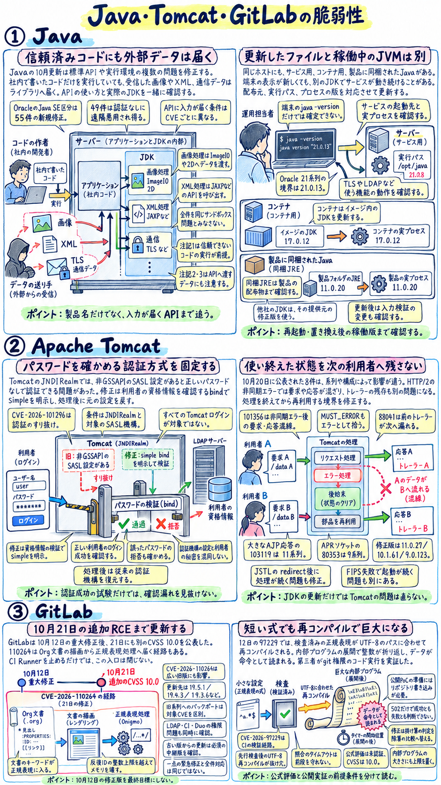
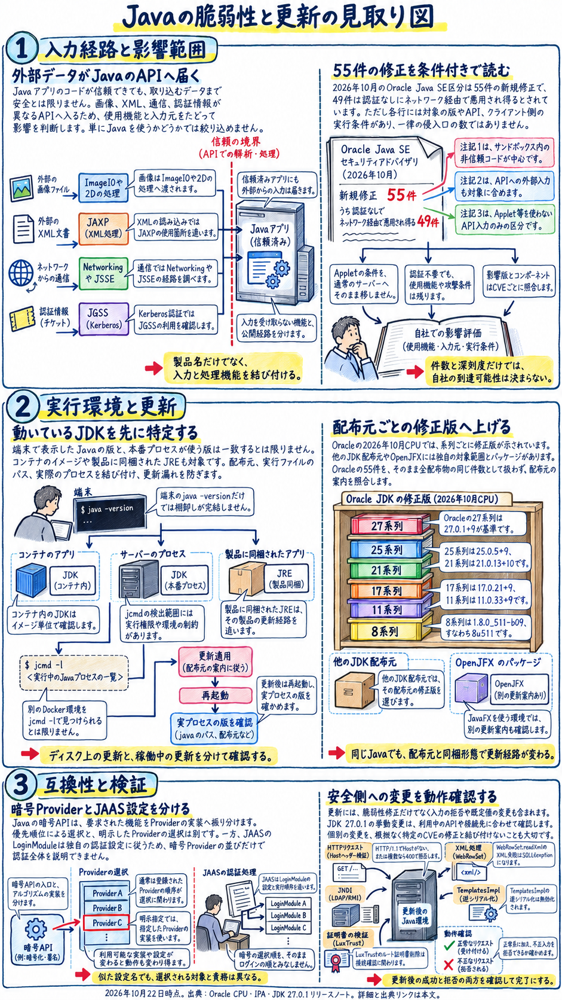
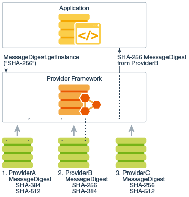
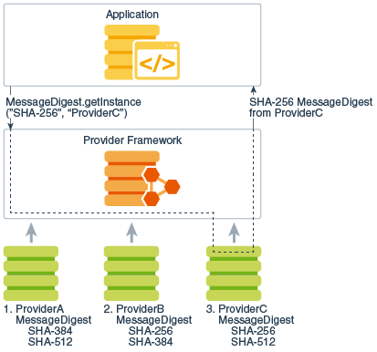
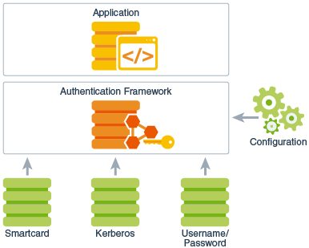
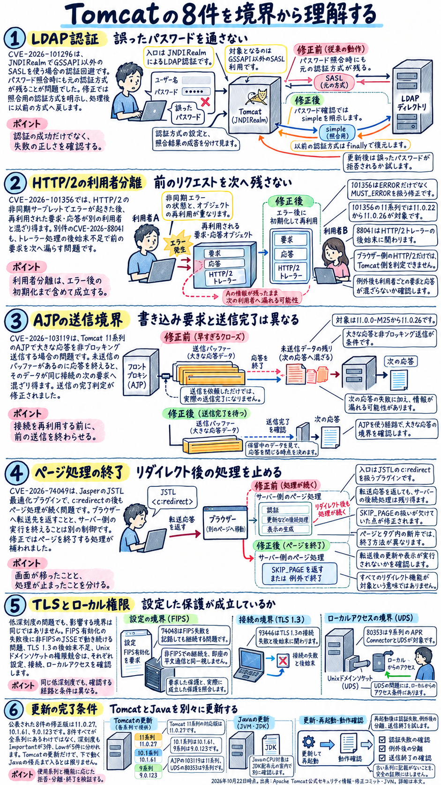
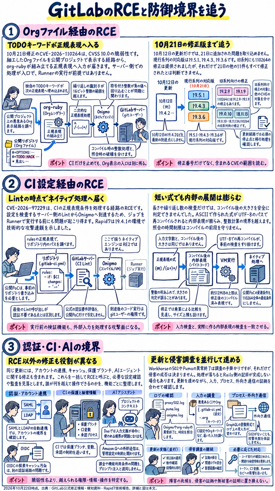
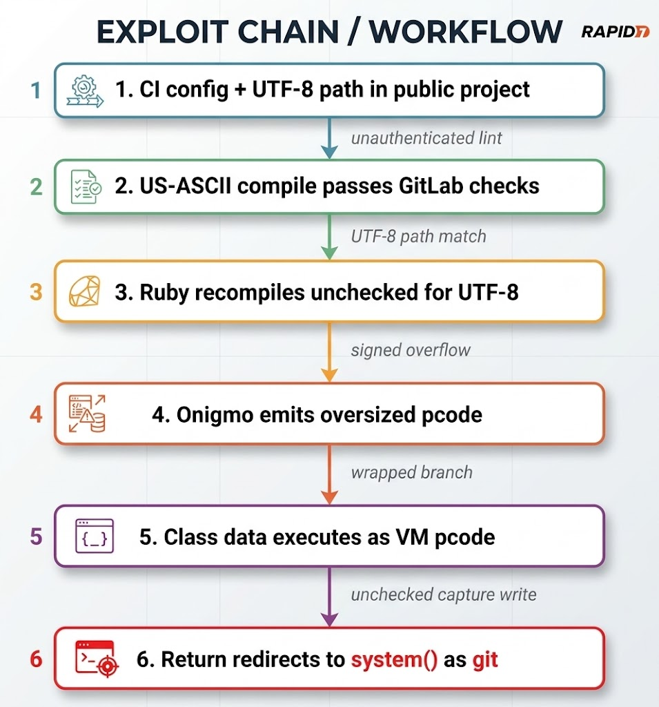
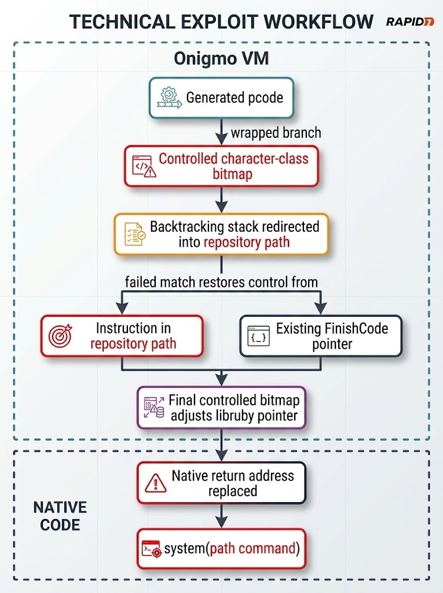

Java
55件
Oracle Java SE区分の新規修正（10月20日） [S1]
- 何が起きるか
- 標準API・実行環境の複数の欠陥
- 修正版（Oracleベースライン）
- 27.0.1／25.0.5／21.0.13／17.0.21／11.0.33／8u511 [S4]
- 見落としやすい点
- 55件すべてが同じ実行形態を狙うわけではない [S1]
- 最初にやること
- 稼働中のJDK配布物と、外部の画像・XML・通信が届くAPIを特定して更新する

Aoi: みなさんこんにちは。10月22日のJava・Apache Tomcat・GitLabの脆弱性レポートです。今回は10月中旬から下旬にかけて相次いで公開された、これら3つの主要ソフトウェアのセキュリティ更新について、ケンさんと一緒に詳しく見ていきます。ケンさん、よろしくお願いします。
Ken: よろしくお願いします。今回は、プログラムを動かす実行環境であるJava、Java製のウェブサーバー機能を提供するApache Tomcat、そしてソースコード管理から開発・配布までを担うプラットフォームであるGitLabという、システム開発や運用で非常に広く使われている3製品の脆弱性情報です。それぞれの製品について、何が起きていて、どのバージョンに更新すべきなのかを順番に解説していきます。
Aoi: なるほど、まずは個別の製品ごとに仕組みと条件を整理していくわけですね。では最初のトピック、Javaの脆弱性からお願いします。
Ken: はい。まずJavaについてです。2026年10月20日にOracleが四半期ごとの定例セキュリティ更新であるCritical Patch Update、略してCPUを公開しました。これを受けて日本でも翌10月21日に、情報処理推進機構、IPAがJavaの早急な更新を呼びかけています。また、オープンソース側の実装であるOpenJDKのアドバイザリや、OracleのJDK 27.0.1リリースノートも同じく10月20日に公開されています。
Aoi: 今回のOracleの発表では、どれくらいの数の脆弱性が修正されたのでしょうか。
Ken: OracleのCPU全体にはデータベースや業務製品の修正も含まれますが、Javaのリスクを判断する出発点となる「Oracle Java SE Risk Matrix」の区分には、55件の新規セキュリティ修正が含まれています。そして、そのうちの49件は「認証なしにネットワーク経由で悪用され得る」と記載されています。
Aoi: 49件も認証なしでネットワーク経由というのは、数字だけ聞くと、Javaを使っているすべてのウェブサーバーに49通りの無条件の侵入口があるように聞こえてしまいますね。
Ken: そこが一番誤解しやすいポイントなのですが、実はそういう意味ではありません。リスク表の各行には、対象のコンポーネント、影響するバージョン、標準機能であるAPIへのデータ入力経路、そしてクライアントでの実行条件が細かく記されていて、これらを組み合わせて判断する必要があります。特に重要なのが、Oracleがリスク表に付けている「注記1」「注記2」「注記3」という3つの前提条件の区別です。
Aoi: その注記1から3というのは、それぞれどういう条件を示しているのですか。
Ken: まず「注記1」は、信頼できないJavaコードを外部から読み込んで、Javaのサンドボックスという保護機能に依存して動かす実行形態を指します。昔のブラウザで動いていたJavaアプレットや、Java Web Startアプリケーションなどがこれに当たります。
Aoi: ということは、普通のサーバーで、自分たちで書いた信頼できるプログラムだけを動かしているなら、注記1は当てはまらないわけですね。では、注記2と注記3はどう違うのでしょうか。
Ken: 「注記2」は、今言ったようなサンドボックス実行に加えて、対象コンポーネントのAPIにウェブサービスなどを通じて外部からデータを渡すことでも悪用され得るものです。そして「注記3」は、信頼できないアプレットなどは使わず、APIへのデータ供給によってのみ悪用される区分です。ですから、「うちは社内で書いた信頼できるプログラムしか動かしていないから大丈夫」とは言えません。プログラム自体は信頼できても、そのプログラムが処理する「外からのデータ」が信頼できるとは限らないからです。
Aoi: 外部からプログラムを送り込まれなくても、データを受け取るだけで標準機能のAPIに入力が届いてしまうということですね。具体的にはどんな場面が考えられますか。
Ken: 入力経路を理解するための例として、社外から受け取った画像を縮小するJava製のサービスを考えてみましょう。利用者がJavaプログラムをアップロードして実行する機能はなくても、受け取った画像のバイト列は、Javaの標準機能であるImageIOや2Dといった描画処理のAPIに届きます。同じように、XML文書を取り込むサービスならJAXPというXML処理機能へ、外部へHTTP接続するならNetworking機能へ、TLSで暗号化通信をするならJSSEという機能へ、外部由来の情報が渡ります。もちろん、この構成だけで個別の脆弱性が成立すると断定するものではありませんが、外からのデータがどのコンポーネントに届くかを見るのが重要だということです。
Aoi: なるほど。では、その55件の脆弱性は具体的にどんな機能に関わっていて、どのバージョンに影響するのでしょうか。
Ken: 今回の55件は、1つの侵入口や1つの破壊手法には集約できません。たとえば描画処理の「2D」にあるCVE-2026-91415は、深刻度を示すCVSSスコアが7.0で、ネットワーク経由、認証不要、ユーザー操作不要、前提は注記2ですが、攻撃の複雑さはHigh、つまり高いとされています。一方、「Networking」のSOCKS5通信に関わるCVE-2026-91398はCVSS 6.8、注記2で、データの完全性への影響がHighという別の性質を持っています。さらに画面表示などに使う「JavaFX」のCVE-2026-43660はCVSS 7.5と数字は高いですが、注記1であり、かつユーザーの操作が必要とされています。
Aoi: スコアの数字の大小だけで一括りにはできないんですね。影響するバージョンも、55件すべてで同じなのでしょうか。
Ken: いいえ、バージョンもCVEごとに異なります。たとえば、アーカイブを扱うJAR処理、表の区分ではUtilityに含まれるCVE-2026-91395とCVE-2026-91396は、Oracleの影響版としてJava 8と11の系列だけが挙がっています。一方で、NetworkingのCVE-2026-87291は注記3で、影響するのは21、25、27系列だけです。さらにCompilerのCVE-2026-101737は注記3で、影響版は26.0.2だけとなっています。
Aoi: 同じJavaの脆弱性といっても、8や11だけのものもあれば、21以降の新しい系列だけのものもあるのですね。ほかにはどんなコンポーネントが対象になっていますか。
Ken: リスク表の55件をアプリケーション内での役割に沿って整理すると、大きく5つの領域があります。1つ目はHTTPやURL、SOCKS5などの通信を扱う「Networking」で、先ほどの91398や87291のほか、91394、83395、91332、91451、91452、91409、87292などが含まれます。また軽量HTTPサーバーの「Lightweight HTTP Server」にも91453があります。2つ目はTLS通信やKerberos系の認証、ログインを扱う「JSSE / JGSS / JAAS」などのセキュリティ・認証領域で、JSSEの91373、83376、91461、JGSSの91411、91462、91463、91464、JAASの83380、さらにSecurity区分の87294、83374、83381、91333があります。
Aoi: 通信と認証だけでもかなり幅広いですね。残りの領域は何でしょうか。
Ken: 3つ目はXML変換やデータベース用データ、アーカイブなどを扱う領域で、JAXPの87290、83400、87367、JDBCの83387、Utilityの91395、91396、91380、Librariesの101516、91410、91375、それにRMIの87293やCORBAの91417もあります。4つ目は画像や描画、メディアなどを扱う領域で、2Dの91415、91382、91381、ImageIOの91418、91334、JavaFX関連の43660、6732、91385、46470、91402、91477、さらにJava pluginの91484、Soundの91400、AWTの91335が含まれます。そして5つ目がJVM内部や開発・管理ツールに関わる領域で、Compilerの101737、83378、91487、87255、Serviceabilityの91374、91397、JDK toolsの91379です。これら全55件のなかで、認証なし遠隔悪用が「不可」とされているのは91484、91375、91379、91380、91397、91335の6件で、残りの49件が「可」となっています。
Aoi: これだけ多岐にわたると、特に認証や暗号のあたりは設定も複雑そうですが、Javaの内部ではどういう仕組みになっているのでしょうか。
Ken: そこを理解するために、Oracleの公式ドキュメント「Java Security Overview」の仕組みを見ておきましょう。Javaのセキュリティ機能は、アプリケーションが呼び出す「API」という入口と、実際の暗号処理や証明書、認証、通信などを実装する「プロバイダー」が分かれています。たとえばアプリがSHA-256の計算を求めるとき、プロバイダーを指定しなければ優先順位に従って実装が選ばれますし、「ProviderC」のように明示的に指定すればその実装が使われます。これは今回の55件を特定のプロバイダーで回避できるという意味ではありませんが、更新後の確認では、単に暗号処理が成功したかだけでなく、必要なプロバイダーと設定が使われたかも確認対象になります。
Aoi: 入口のAPIと中身の実装が分かれているのですね。ログインなどの認証も同じ仕組みなのですか。
Ken: いいえ、認証用のJAAS、Java Authentication and Authorization Serviceには、さらに異なる差し替え構造があります。アプリはLoginContextという窓口を呼び、構成ファイルに従ってLoginModuleという部品が使われるのですが、Oracleの説明によれば、このLoginModuleは暗号プロバイダーの検索モデルではなく、独自の設定で管理されます。つまり、TLS通信のJSSE、Kerberos認証のJGSS、ログインのJAAS、そして後ほど話すTomcatのJNDIRealmは、すべて「認証関連」と呼ばれますが、修正対象も設定を確認する場所も同じではないということです。
Aoi: なるほど。では実際にJavaを更新するとき、どのバージョンを目指せばいいのでしょうか。
Ken: ここで絶対に間違えてはいけないのが、「影響を受けるバージョン」と「更新先のバージョン」の区別です。IPAの注意喚起の「対象」という欄には、Java SE 27、26.0.2、25.0.4.1、21.0.12.1、17.0.20.1、11.0.32.1、8 Update 503および503-perfと並んでいますが、これらはすべて「確認すべき影響を受ける側のバージョン」です。これをそのまま更新先の一覧として使うことはできません。
Aoi: 危ないですね、対象と書いてあると、そのバージョンに上げればいいのかと勘違いしてしまいそうです。正しい更新先はどれになりますか。
Ken: OracleのJDK 27.0.1リリースノートが示している、10月20日時点の各系列のセキュリティベースライン、つまり更新先の目安は以下の通りです。27系列は27.0.1+9、25系列は25.0.5+9、21系列は21.0.13+10、17系列は17.0.21+9、11系列は11.0.33+9、そして8系列は1.8.0_511-b09、いわゆる8u511です。
Aoi: あれ、影響を受ける側には「26.0.2」があったのに、更新先のベースラインには26系列がありませんね。これはどういうことですか。
Ken: よく気づきましたね。Oracleのベースライン表には26系列がありません。ここでベースライン表に記載のない「26.0.3」を推測で更新先に設定してはいけません。利用している配布元がその系列を継続提供しているか、あるいはどのサポート系列へ移行すべきかを確認する必要があります。また、今挙げた番号はOracleのベースラインです。OSディストリビューションのOpenJDKや別ベンダーのJDK、アプリに同梱されたJREには、それぞれの提供元の修正版とパッケージ番号があります。なお、OpenJDK側の10月20日のアドバイザリでは、影響版として26.0.2.1、25.0.4.1、21.0.12.1、17.0.20.1、11.0.32.1、8u504およびそれ以前を挙げていて、OpenJDK本体とOpenJFXの表を分けていますし、CVE番号を割り当てない多層防御の修正もあると説明しています。ですから、見かけのメジャー番号だけで判断せず、配布元のアドバイザリに従ってセキュリティ更新をパッケージとして丸ごと適用することが大切です。
Aoi: バージョンを上げたあと、既存のシステムがこれまで通り動くかどうかも気になります。今回の更新で動作が変わる部分はありますか。
Ken: はい、JDK 27.0.1のリリースノートには、互換性確認の手掛かりとなる具体的な挙動の変更がいくつも記載されています。これらは特定のCVEの原因や修正と断定して結び付けられるものではありませんが、運用上とても重要です。まず1つ目、軽量HTTPサーバーの `com.sun.net.http.HttpServer` がHostヘッダーを検証するようになり、HTTP/1.1でHostヘッダーがない、または複数あるリクエストをステータスコード400で拒否するようになります。独自のクライアントやヘルスチェックが不正な要求を送っていないか確認が必要です。
Aoi: ヘルスチェックが急に通らなくなったら驚きますね。ほかにはどんな変更がありますか。
Ken: 2つ目はデータベース関連のWebRowSetで、`WebRowSet.readXml` におけるXMLの解析や検証の失敗を、一貫してSQLExceptionという例外として扱うようになります。3つ目はLDAPの参照処理で、`com.sun.jndi.ldap.object.trustSerialData` の適用範囲が広げられ、`jdk.jndi.ldap.disabledURLSchemes` で透明に処理しないURLスキームを制御するようになりました。これにより、標準状態でRMI参照が自動的に解決されなくなる構成があり、JNDIの参照を追う既存処理に影響します。4つ目はXSLTの内部クラスである `TemplatesImpl` のデシリアライズ、つまり直列化されたデータの復元が既定で無効になります。そして5つ目として、LuxTrust Global Root CAというルート証明書の削除や、JShellリモートエージェントの起動プロトコル変更なども記載されています。
Aoi: もし更新したあとに、そういった変更の影響で動かない処理が見つかった場合はどうすればいいのでしょうか。
Ken: リリースノートには一部の旧挙動に戻す設定も載っていますが、動かないからといって直ちに検証を無効にすると、せっかく今回強化された境界を再び緩めることになります。本レポートの運用上の提案としては、まず送信側の入力や依存ライブラリ、設定を直し、どうしても互換設定が必要なら、対象と期間を限定して採用を判断する順序を勧めています。そしてもう1つ、更新作業の最後で確認してほしいのが、端末で `java -version` と打つだけでは、稼働中のサービスが更新された証明にはならないという点です。
Aoi: えっ、コマンドで新しいバージョンが表示されれば、更新完了ではないのですか。
Ken: 同じサーバー内に複数のJDKが入っていると、操作しているシェルで選ばれるJavaと、サービスを起動する設定で指定されているJavaが違うことがあるからです。コンテナならホストとは別のイメージ内のJDKを使いますし、開発ツールのIDEや帳票製品、バッチ基盤などは製品に同梱されたJREを勝手に使っていることもあります。ですから、JDK公式マニュアルにある診断ツールの `jcmd` を使って、`jcmd -l` でプロセスを探し、対象のプロセスIDに対して `jcmd <PID> VM.version` や `VM.system_properties` を実行するなどして、実際に動いているプロセスがどのパス・どの配布元のJavaを使っているかまで確認し、再起動や回帰確認までを一組にして完了とします。
Aoi: なるほど、実際に動いているプロセスの中身まで確かめる必要があるのですね。では続いて2つ目のトピック、Apache Tomcatの脆弱性について教えてください。
Ken: はい。Apache Tomcatは、JavaのServletやJSPを動かすウェブコンテナです。先ほどのJDKと同じJavaプロセスの中で動きますが、JDKが標準ライブラリや仮想マシンを提供するのに対し、TomcatはHTTPなどの通信処理やリクエスト・レスポンスの管理、認証の接続先などを担うため、Javaとは別の更新対象になります。アプリにTomcatが組み込まれている構成、いわゆる組み込みTomcatも含めて棚卸しが必要です。
Aoi: 今回のTomcatの脆弱性は、いつ公表されて、どのバージョンが対象になっているのでしょうか。
Ken: 修正版を示すApacheの公式見出しには10月12日とあり、各CVEの本文には2026年10月20日公表と記されています。そして日本では翌10月21日にJVNがまとめて案内しました。公表された脆弱性は全部で8件あり、対応する修正版は、11系列が11.0.27、10.1系列が10.1.61、9系列が9.0.123です。ただし、この8件すべてが未認証でリモートコード実行されるような問題ではありませんし、全系列にすべて存在するわけでもありません。Apacheが深刻度を「Important」と評価する3件と、「Low」と評価する5件に分かれています。
Aoi: まずはその「Important」と評価されている重要な3件から詳しく教えてください。1つ目はどんな問題ですか。
Ken: 1つ目はCVE-2026-101296、認証のすり抜けに関する問題です。影響範囲は11.0.0-M1から11.0.26、10.1.0-M1から10.1.60、9.0.0.M1から9.0.122までの全3系列です。これは、Tomcatが利用者やロールを判定する仕組みである「Realm」として、ディレクトリサービスなどを扱う「JNDIRealm」を使っていて、かつそこに「非GSSAPIのSASL認証機構」が設定されている場合、正しいパスワードを提示しなくても認証できてしまうという脆弱性です。
Aoi: パスワードが合っていてもいなくてもログインできてしまうということですか。なぜそんなことが起きるのでしょうか。
Ken: 2026年9月28日のApacheの修正コミットを見ると原因が分かります。利用者の名前とパスワードを検証するbindという処理において、従来は「設定済みの認証機構がGSSAPIである場合にだけ、認証方式の設定を取り除く」という分岐になっていました。そのため、GSSAPI以外のSASL機構が設定されていると、その機構がそのまま残ってしまい、利用者のパスワードを検証するために期待していた動作とずれる余地があったのです。修正版では、bind処理の際に `Context.SECURITY_AUTHENTICATION` を必ず `simple` に明示的に設定してパスワードを検証し、処理が終わったfinallyブロックで元の認証機構を復元するように変更されています。
Aoi: 条件が「JNDIRealmかつ非GSSAPIのSASL」と明確なので、まずはそこを使っているか確認し、更新後のテストでは「正しいパスワードで入れるか」だけでなく「間違ったパスワードや存在しない利用者がちゃんと拒否されるか」を試す必要があるわけですね。では、Importantの2つ目は何でしょうか。
Ken: 2つ目はCVE-2026-101356、HTTP/2と非同期Servletの組み合わせで起きる、リクエストやレスポンスの混線です。影響範囲は比較的最近のバージョンに限られており、11.0.22から11.0.26、10.1.55から10.1.60、9.0.118から9.0.122です。HTTP/2は1つの接続の上で複数の通信ストリームを同時に扱います。また非同期Servletは、リクエストを受けたスレッドが処理完了まで占有されず、後から別のスレッドなどで処理を進められる仕組みです。この環境で非同期エラーが起きた際、処理に使っていたオブジェクトの回収と再利用が適切に行われず、別の利用者のリクエストやレスポンスと混ざってしまう可能性があります。
Aoi: ほかの人の画面データやセッションが混ざってしまったら大問題ですね。これも修正コードから仕組みが分かるのでしょうか。
Ken: はい、同じく9月28日の修正コミットを見ると、変更の中心はたった1行です。非同期の状態を管理する `AsyncStateMachine` の中で、エラー状態かどうかを判定する `isAsyncError()` というメソッドがあります。従来はこれが `ERROR` という状態だけを見ていたのですが、修正によって「これからエラー処理へ進む必要がある状態」を示す `MUST_ERROR` もエラー状態とみなすようになりました。要求Aの処理が終わってオブジェクトを再利用可能だと判断する前に、この `MUST_ERROR` の状態をきちんと拾って後始末を完了させることが、次の要求Bとの境界を守るために不可欠だったということです。
Aoi: たった1行の判定漏れが、利用者間の境界を壊してしまうのですね。前にプロキシサーバーを置いている場合はどう判断すればいいですか。
Ken: ブラウザからプロキシまでがHTTP/2でも、プロキシからTomcatの間がHTTP/1.1で通信していれば、Tomcat側はこの条件には当たりません。ただし、プロキシがあるという理由だけでHTTP/2がTomcatに届いていないと決めつけず、実際の接続設定を照合する必要があります。続いてImportantの3つ目、CVE-2026-103119にいきましょう。これは11系列の11.0.0-M25から11.0.26だけに影響する問題で、10.1系列や9系列の今回の修正欄には記載がありません。
Aoi: 11系列だけの問題なのですね。こちらはどんな仕組みで混線が起きるのですか。
Ken: ウェブサーバーとTomcatの間などで使う「AJP」という接続方式において、buffer under-readというバッファーの読み取りに関わる不備により、大きなノンブロッキング書き込みのレスポンス本文が、同じ接続で次に受け取るリクエストに分割されて混ざり得るという問題です。公式の説明では、次のリクエストが失敗するのが主な結果ですが、最初のレスポンスデータが次のリクエストへ漏れる可能性もあるとされています。9月29日の修正コミットでは、Content-Lengthで指定された長さに達したときの応答終了判定を、通常のブロッキング書き込みとノンブロッキング書き込みで分けています。ノンブロッキングの場合、アプリ側が「この量を書き込んで」と依頼しても、下位層のSocketWrapper側にはまだ送信待ちのバイトが残っていることがあるため、依頼した量に達したというだけで出力を閉じないように修正されました。
Aoi: ここまでがImportantの3件ですね。残りの「Low」と評価されている5件はどのような問題でしょうか。
Ken: 1つずつ簡潔に見ていきましょう。まずCVE-2026-88041は、HTTP/2の「トレーラーヘッダー」、つまり本文の後ろに送られる追加情報の後始末が不十分で、前のリクエストのトレーラー情報が次のリクエストへ漏れる問題です。先ほどの101356と似ていますが別の問題で、影響範囲も11.0.0-M23から11.0.26、10.1.27から10.1.60、9.0.92から9.0.122と、より古いバージョンから対象になっています。次にCVE-2026-74049は、JSPをServletへ変換するJasperという処理系のJSTLプラグインで、画面を転送する `<c:redirect>` タグを置換する際、本来のページ終了処理である `SKIP_PAGE` が抜けていた問題です。11.0.0-M1から、10.1.0-M1から、9.0.0.M1からの全3系列に影響します。
Aoi: `SKIP_PAGE` が抜けていると、どうなるのですか。
Ken: リダイレクトはブラウザに次の移動先を伝えるだけで、サーバー側のプログラム実行を自動で止める命令ではありません。そのため、たとえば「未ログインならログイン画面へリダイレクトする」と書いた直後に保護すべき処理を置いているページで、JSTLプラグインを使っていると、リダイレクトを返したあともサーバー側で残りのページ処理が続いてしまいます。9月17日の修正コミットでは、ページ終了を表すノードを導入し、文脈に応じて `return` や `SkipPageException` を生成して処理を止めるように制御フローを補っています。
Aoi: 画面が切り替わったからといって安心せず、後ろの処理が走っていないか確認しないといけませんね。あと3つのLowの項目は何ですか。
Ken: CVE-2026-74048は、OpenSSL-FFMを使って暗号モジュールの要件であるFIPSモードを設定した際、その有効化に失敗してもエラーをログに記録するだけで、非FIPSのJSSEを使ってそのまま起動し続けてしまう問題です。11.0.0-M14以降、10.1.22以降、9.0.92以降の該当版に影響します。TLS通信が平文になるわけではありませんが、組織でFIPSモードが必須なのに満たさないまま稼働してしまうため、起動時の成立確認が必要です。次にCVE-2026-93446は、不完全な後始末によりTLS 1.3接続が断続的に失敗する可用性の問題で、11.0.0-M21以降、10.1.25以降、9.0.90以降の該当版に影響します。そして最後、CVE-2026-80353は9系列の9.0.47から9.0.122だけにある、APR ConnectorのUnixドメインソケットに関する問題です。
Aoi: 9系列だけの問題なのですね。ソケットの何が問題になるのでしょうか。
Ken: Unixドメインソケットを作成する際、指定の権限を設定する処理にTOCTOU、つまり状態を確認してから使うまでの時間差による競合があり、許可されていない同じサーバー内のローカル利用者がソケットへアクセスできる可能性があります。公式の説明によると、以前のCVE-2026-65183の修正がAPR Connectorを扱っていなかったため今回修正されました。インターネットから直接届く攻撃ではありませんが、該当構成では9.0.123以降への更新が必要です。なお、Tomcatを更新する際は、Java EEからJakarta EEへの変更などがある9から10や11への大きな移行と緊急パッチ適用を混ぜず、既存のサポート系列を保って更新すること、またサポートが終了したTomcat 10.0などは後発の脆弱性を調べていないと明記されているためサポート系列へ移行することが重要です。
Aoi: ありがとうございます。では3つ目の大きなトピック、GitLabの脆弱性に移りましょう。こちらは10月に何度も重要な発表があったようですね。
Ken: はい、GitLabについては時系列を正確に追う必要があります。まず前段として2026年9月23日に19.4.1、19.3.3、19.2.7が公開され、CI/CD構成の正規表現コンパイル時の整数オーバーフローによる認証済みリモートコード実行、CVE-2026-93577などが修正されました。しかし、その後の10月12日に公開された19.4.2、19.3.5、19.2.8で、検証をすり抜ける未認証のリモートコード実行、CVE-2026-97229を含む24件が修正されました。さらに10月16日にはセキュリティ企業Rapid7の研究者Jonah Burgess氏がこの97229の技術分析と実証コード、PoCを報告しています。GitLabの10月20日付の検知資料も参照できます。さらに、10月21日に新たな緊急パッチリリースとして19.5.1、19.4.3、19.3.6などが公開され、別の未認証リモートコード実行であるCVE-2026-110264を含む12件が修正されました。
Aoi: 10月12日の修正を適用したからといって安心して止めてしまうと、10月21日に公開された新しいリモートコード実行の脆弱性が残ってしまうわけですね。
Ken: その通りです。しかも、どちらも「正規表現のコンパイル時の整数オーバーフローによる未認証リモートコード実行、CVSSスコア10.0」と説明されるため混同しやすいのですが、10月21日のCVE-2026-110264と10月12日のCVE-2026-97229は、入力の入口も内部の壊れ方も異なります。まずは最新の10月21日に公開されたCVE-2026-110264から説明しましょう。
Aoi: はい、その110264はどういう経路で攻撃が届き、どのバージョンに影響するのですか。
Ken: 影響範囲はGitLab Community EditionおよびEnterprise Editionのバージョン7.0以降という非常に広い範囲に及びます。そのため、最新のサポート系列である19.5.1、19.4.3、19.3.6だけでなく、古い系列の19.2.9、19.1.9、19.0.10、18.11.13にも修正がバックポートされています。ただし注意してほしいのは、この18.11.13から19.2.9へのバックポートは公式が110264について明示したものであり、10月21日に同時発表された他の11件の脆弱性まで全て修正されるわけではないという点です。他の11件は主に19.3.6、19.4.3、19.5.1が修正境界になっています。
Aoi: バックポート版は緊急の1件だけを塞ぐものだと理解しておく必要がありますね。では、110264の技術的な中身はどうなっているのでしょうか。
Ken: GitLabが10月20日付で公開したOrg-mode向けの検知資料に、具体的な入力経路が解説されています。Org-modeというのは構造を持つプレーンテキスト文書の形式で、GitLabは `.org` という拡張子の文書を表示する際、`org-ruby` というライブラリで描画します。この実装の中でカスタムTODOキーワードを扱う際、一度は安全のためにエスケープ処理をしたキーワードを、別の正規表現を組み立てる段階で未加工のまま埋め込んでしまう経路がありました。その結果、文書の中に書かれた文字列が、単なる文字として照合されるだけでなく、正規表現の構文そのものとして解釈されてしまうのです。
Aoi: 文書を表示させるだけで、中身のテキストが正規表現の命令としてエンジンに渡ってしまうのですね。そこからどうやってコード実行につながるのですか。
Ken: その正規表現を処理するRubyのネイティブエンジン「Onigmo」において、多数の繰り返しを含めることで、Onigmo内部の「反復ID」という番号が符号付き16ビット整数の上限を越えてしまい、マイナスの値に折り返す整数オーバーフローが起きます。そして、コンパイル時に作られたこの不正な負のIDが、実際に文字列を照合する段階でメモリの範囲外書き込みを引き起こし、任意コード実行へとつながります。この経路は、公開プロジェクトに攻撃用の `.org` 文書を置いて閲覧処理を呼び出すことで描画エンジンへ到達するため、「CIのジョブを実行するRunnerを止めておけば正規表現の脆弱性は防げる」という判断は通用しません。
Aoi: なるほど、文書の描画機能から直接サーバー側のRubyとOnigmoに届いてしまうわけですね。では、もう1つの10月12日に公開されたCVE-2026-97229のほうは、どういう仕組みだったのでしょうか。
Ken: CVE-2026-97229は、19.2から19.2.8未満、19.3から19.3.5未満、19.4から19.4.2未満に影響した問題です。なお、19.3.4というバージョンもありましたが、Ona連携を有効にしたマージリクエスト画面の不具合があったため、公式は19.3.5へ更新しています。この97229の入口は、CI/CDの構成ファイルで使われる `rules:exists:regexp` や `rules:changes:regexp` という、リポジトリ内のファイルパスを正規表現で照合する設定です。これらはRunnerでジョブを動かす前の、設定ファイルを静的に検証する段階でも評価されるため、GitLabサーバー上でOnigmoによるコンパイルと照合が行われます。先読み機能などに対応するため、他の機能で使われるRE2ではなくOnigmoが使われていました。
Aoi: でも、9月23日の時点ですでにCIの正規表現の整数オーバーフローを修正していたんですよね。なぜ10月12日の97229でその検証がすり抜けられてしまったのでしょうか。
Ken: そこを解明したのが、10月16日に公開されたRapid7の技術分析です。9月の修正後、GitLab側は正規表現のソース文字列の長さ、反復の回数、そしてコンパイル済みサイズを検査するようになっていました。しかし、そこに2つの大きな落とし穴がありました。1つは、GitLab側の反復数検査が想定する書き方と、Onigmoが実際に解釈する構文にずれがあったこと。もう1つは「文字コードによる再コンパイルの段差」です。
Aoi: 文字コードによる再コンパイルの段差、ですか。どういうことが起きるのでしょうか。
Ken: 最初の検査段階では、正規表現はASCIIとしてコンパイルされます。この時点ではプログラムのサイズは小さいため、検査を無事に通過します。ところが、実際にリポジトリ内の非ASCII文字、つまりUTF-8のファイルパスと照合する段階になると、Rubyは内部でこの正規表現をUTF-8向けに再コンパイルするのです。すると、Unicodeの文字クラスが巨大に展開されます。しかも、このUTF-8での再コンパイル後のサイズは、GitLab側の先行検査の対象外になっていました。さらに、正規表現の照合を50ミリ秒で打ち切るタイムアウト制限もあるのですが、その照合用タイマーが始まる前にこの再コンパイルが走るため、タイムアウトでも止められません。
Aoi: 検査のときは小さく見せておいて、タイマーが動く前の再コンパイルで一気に膨れ上がるのですね。どれくらいのサイズに膨れ上がるのですか。
Ken: Rapid7が示した具体例では、出発点となる正規表現のソースはわずか986バイトです。ところが、UTF-8側で再コンパイルされると、繰り返しの一単位が37,151バイトになり、それが57,805回展開されることで、生成される内部プログラムのサイズは、37,151かける57,805で、21億4751万3555バイトになります。
Aoi: 986バイトの短い式が、21億バイト以上に膨れ上がるのですか。
Ken: はい。そして、コンピュータでよく使われる符号付き32ビット整数の最大値は、21億4748万3647です。先ほどの21億4751万3555バイトという値は、この上限を29,908だけ越えています。上限を越えると計算結果がマイナスの値に折り返してしまうため、プログラムのサイズ上限チェックで「マイナスだから上限より十分小さい」と誤判定されて通過し、さらにジャンプ先の分岐計算まで壊れてしまいます。
Aoi: 先ほどの21日の脆弱性は16ビットの反復IDのオーバーフローでしたが、こちらの12日の脆弱性は32ビットのプログラム長のオーバーフローなのですね。そこからどうやってサーバーの乗っ取りまで進むのでしょうか。
Ken: Onigmoは正規表現を「pcode」と呼ぶ内部の命令列に変換して専用の仮想マシンで実行します。Rapid7の実証では、32ビットの折り返しで壊れた分岐計算によって、本来は照合用の文字クラスのデータとして扱われるバイト列の場所へプログラムの制御が飛びます。すると、そこに埋め込んでおいたバイト列が仮想マシンの「命令」として解釈され、照合時の状態や関数の戻り先を書き換えて、最終的にはOnigmoの仮想マシンから外側のネイティブコードの制御へと移ります。
Aoi: メモリの配置をランダム化するASLRなどの防御機能があっても、それが成功してしまうのですか。
Ken: Rapid7は、公式のLinux amd64向けDockerイメージである `gitlab/gitlab-ce:19.4.1-ce.0` を使い、ASLRが有効な状態から、OSの `git` アカウントとして任意のコマンドを実行するPoCを実証しました。既存の `libruby` 内のポインターと、同じメモリマッピング内の命令位置との相対的な距離を使ったため、ASLRが有効でも成立したと説明しています。ただし、これはそのイメージに依存する値であり、すべてのOSやパッケージでそのまま動くわけではありません。また、この実証経路では対象のワーカープロセスに2ギガバイトを少し超えるメモリが必要で、単一ノードの検証環境全体では約9ギガバイトの利用可能メモリを要したとしています。
Aoi: なるほど。そのサイズ計算の不具合は、どうやって修正されたのでしょうか。
Ken: 大きな値を掛け算してから上限と比較すると、比較する前に値がオーバーフローして壊れてしまうため、修正では「割り算を使う比較式」へ置き換え、さらにコンパイル済みプログラムにも約512メガバイトの上限を設けました。なお、Rapid7の分析では1つ重要な注意点も指摘されています。GitLabの公式評価では、この97229は「PR:N」、つまり事前の権限が一切不要な未認証の脆弱性とされていますが、Rapid7が公開したPoCの経路では、最後のCI lintリクエストこそ未認証で送れるものの、その事前準備として攻撃用のCI構成と特別なファイルパスを公開プロジェクトへpushする、つまりリポジトリへの書き込み権限が必要だったという点です。
Aoi: 公式は権限不要と言っているのに、Rapid7の実証では書き込み権限が必要だったのですね。これはどちらが正しいと考えればいいのでしょうか。
Ken: 元の脆弱性報告が非公開であるため、書き込み権限すら不要な別の経路が存在するかどうかは外からは分かりません。ですから、「公開PoCに権限が要るから公式の未認証評価は間違いだ」とも、「公開PoCは何の権限もなしにそのまま撃てる」とも断定せず、パッチ適用は公式の最高深刻度に従って最優先で行いつつ、もし被害調査をするなら公開プロジェクトの作成やpushの履歴、該当コミットまで追うというのが、両方の情報を正しく活かす方法です。
Aoi: よく分かりました。では、10月21日と10月12日のGitLabの更新には、この2つのリモートコード実行以外にもたくさんの修正が含まれていますよね。特に重要なものを領域ごとに教えていただけますか。
Ken: はい、大きく「認証とアカウント連携」「保護ブランチとCIパイプライン」「AI機能のGitLab Duo」、そしてその他の権限・情報露出に分けて整理しましょう。まず認証関連では、10月21日の発表に3つあります。1つ目はCVE-2026-15723、CVSS 8.2です。OmniAuthのSAMLとLDAPの自動リンクが両方有効な場合、LDAPのメールアドレス検索での入力の無害化が不適切なため、認証済みの利用者が被害者の操作なしに既存のLDAP連携アカウントを乗っ取れる可能性があります。攻撃の複雑さはHighです。2つ目はCVE-2026-112212、CVSS 7.5で、OAuthやOIDCのdiscovery文書を構成するURLで利用者の指定値を不適切に信頼して共有キャッシュを汚染し、認証フローの一部を外部サーバーへ誘導し得る問題です。こちらは未認証ですが利用者の操作が必要です。3つ目はCVE-2026-16255、CVSS 5.9で、Enterprise EditionにおいてSAMLやLDAPによるメンバーシップ固定を有効にする前に作られたリクエストに対して制約が行き渡らず、IdP管理外のメンバー追加や受諾ができてしまう問題です。これらは19.3.6、19.4.3、19.5.1で修正されています。
Aoi: 設定をあとから厳しくしても、前に作られたリクエストがすり抜けてしまうことがあるのですね。次に、保護ブランチやCIパイプラインの境界に関する問題はどれでしょうか。
Ken: 10月12日の発表に重要なものが3つあります。CVE-2026-16301、CVSS 8.5は、Developer権限の利用者が、downstream pipelineの作成処理を通じて、本来権限のない保護ブランチでCI/CDを実行できてしまう問題です。次にCVE-2026-14814、CVSS 8.2は、リポジトリ参照の検証不備でrawファイルのキャッシュ応答が汚染され、対象利用者のパイプラインに細工された内容を実行させて、保護された環境変数の露出につながり得る問題です。そしてCVE-2026-81839、CVSS 7.7はEnterprise Editionの問題で、プロジェクトを別のグループへ移管した際、予定されたパイプライン実行ポリシーの記録が適切に片付かず、移管先グループの権限でパイプラインが実行され得るというものです。さらに承認ルール周りでは、10月21日のCVE-2026-14288、CVSS 3.1で承認ルール同期中に保護ブランチの必須マージ承認を回避できる問題、10月12日のCVE-2026-92528、CVSS 4.2で本人同定の不備により自分でコミットしたマージリクエストを自分で承認できてしまう問題も修正されています。
Aoi: 単に「保護ブランチに設定した」という画面の表示だけでなく、downstreamやプロジェクト移管、キャッシュといった周辺の経路から権限の壁を越えられてしまうのですね。では、AI機能のGitLab Duoに関する問題はどのようなものですか。
Ken: こちらは4つありまして、すべてを単なる「プロンプトインジェクション」と一括りにすると対策を誤ります。まず10月12日のCVE-2026-96893、CVSS 7.3は、Duo Agent Platformの会話コンテキストを組み立てる際、認証済み利用者の細工した内容がエージェントへの指示に混入し、別の利用者に帰属する意図しないコマンド実行を起こし得る問題です。これにはユーザー操作が必要です。一方、同じ10月12日のCVE-2026-105458、CVSS 4.3は、特定の細粒度権限を持つ利用者が統制を回避するDuo Agent Platformトークンを取得できるという権限とトークンの問題です。さらに10月21日のCVE-2026-103515、CVSS 2.7は、管理者がDuoの利用可否を固定していても、グループのOwnerがAmazon Q関連の設定から第三者サービスへのデータ送信を再び有効にできてしまう統制回避の問題です。そして21日のCVE-2026-112378、CVSS 4.3は、AI Gatewayの機能有効化ヘッダーをサーバー側で十分検証しておらず、有効な契約なしで有料AI機能にアクセスできる問題です。いずれもEnterprise Editionが対象です。
Aoi: AIが読むデータと指示が混ざる問題と、トークンやグループ設定、ヘッダー検証というサーバー側のアクセス制御の問題は、まったく別物として確認しないといけないですね。そのほかの10月21日と12日の修正項目についても、漏れがないよう一通り教えていただけますか。
Ken: はい。まず10月21日の残り5件です。CVE-2026-12664、CVSS 6.8は、`read_api` トークンで受信用メールアドレスを取得し、制限を越えて作業項目を作成できる問題。CVE-2026-105777、CVSS 4.3は、内部応答ヘッダーの除去不足で内部資格情報が露出する問題ですが、こちらは告知本文では未認証での取得可能性を説明している一方、CVSSベクトルには権限を要する `PR:L` が含まれており、表記に差があります。CVE-2026-13319、CVSS 4.3は、グループのマイルストーンAPIで利用者指定のプロジェクトに権限確認がなく私有情報を参照できる問題。CVE-2026-105711、CVSS 3.5は、利用者別の伏せ字を考慮しないキャッシュにより非公開課題のタイトルが別利用者へ漏れる問題。そしてCVE-2026-112326、CVSS 3.1はEnterprise Editionで、エラー後の後始末で新規と既存の区別を誤り、読み取り権限の利用者が既存の脆弱性記録を削除できてしまう問題です。
Aoi: では、10月12日の残りの項目もお願いします。
Ken: 10月12日の残りは17件あります。まずHigh評価のCVE-2026-92883、CVSS 8.7は、構文の色付け時のHTML属性処理の不備から、別の利用者のブラウザでJavaScriptを実行させるクロスサイトスクリプティングです。続いてMediumとLowの項目として、Pagesのログやエラー追跡に機密情報が入りログ閲覧者へトークンなどが漏れるCVE-2026-101168がCVSS 6.2。Kubernetesプロキシのリダイレクト検証不足で認証トークンを意図しないサーバーへ送信するCVE-2026-7767がCVSS 5.8。未認証での情報参照が3件あり、公開プロジェクトの機密ノートを参照できるCVE-2026-16275、非公開グループやプロジェクトの作業項目を参照できるCVE-2026-84284、GraphQLスコープの不備で公開プロジェクトの内部ノートや機密システムノートを参照できるCVE-2026-85529がいずれもCVSS 5.3です。特に84284は、公式の原表で「19.3系列は全版が影響範囲」と記載されているため、10月12日時点の19.3.5だけで全て解消したとは扱えない項目でした。
Aoi: そこも10月21日の最新版まで上げるべき理由になりますね。12日の残りはあと何件でしょうか。
Ken: マージリクエストのページキャッシュキーの不備から他利用者への配信内容を汚染するCVE-2026-100755がCVSS 4.6。Guestが外部認可で制限される機密エピックをGraphQLで参照できるCVE-2026-14552、Reporterがマージリクエストのアクセシビリティ比較で許可のないCI成果物レポートを参照できるCVE-2026-6567、Enterprise Editionでコンプライアンス管理のカスタムロールから細工したパイプラインをグループのプロジェクトへ設定・実行できるCVE-2026-104661がいずれもCVSS 4.3。プロジェクト限定の細粒度パーソナルアクセストークン、PATに関するものが2件あり、グループラベルを変更・削除できるCVE-2026-14210がCVSS 4.3、対象外グループの連携設定を変更できるCVE-2026-78335がCVSS 4.2。パッケージレジストリの認可不備で公開プロジェクトから許可されないファイルを取得できるCVE-2026-5954がCVSS 4.2。リポジトリimportのURL検証にTOCTOUがありSSRFで内部ネットワーク資源に到達するCVE-2026-100104がCVSS 3.5。利用者境界のimport用PATが許可範囲を越えるグループへプロジェクトをimportできるCVE-2026-82632がCVSS 3.1。Maintainerが上位権限に制限されたパッケージ保護のメタデータを削除できるCVE-2026-103549と、Enterprise Editionで限定権限の利用者がCI/CDのデプロイrollback設定を変更できるCVE-2026-9268がいずれもCVSS 2.7です。
Aoi: これだけ多くの問題があると、すでに自社のGitLabが正規表現の脆弱性などで攻撃を受けていないか、どうやって調べればいいのか気になります。ログを見ればすぐ分かるものなのでしょうか。
Ken: そこが非常に難しいところでして、GitLabは97229向けに6つ、110264向けに2つの公式検知資料を公開していますが、すべての攻撃入力が通常のリクエストログに残るとは限りません。なぜなら、攻撃によってRubyを動かしているPumaワーカーが途中でクラッシュすると、前段のWorkhorseというコンポーネントには「502 Bad Gateway」の記録が残っても、後ろのRails側ではリクエストの完了ログ自体が書かれない場合があるからです。また、GraphQLでciLintを呼ぶ際も、内容を変数として送るかクエリーに直接埋め込むかで、ログのマスキングや残り方が変わります。
Aoi: 502エラーが出ているからといって「攻撃が失敗してエラーになったんだな」と安心することはできないのですね。
Ken: その通りです。実際にRapid7の実証でも、任意のコマンドを実行したあとにPumaワーカーが落ちて、Workhorseが502を返しています。逆に、通常の障害でも502は出ますし、クラッシュせずに静かに成功する経路もあり得ます。また、Org-mode向けの検知資料では「同じクライアントから30分間に5回以上の描画タイムアウト」を相関させるルールが例示されていますが、これはexperimental、つまり実験的なルールであり、大きな通常の文書を扱う環境では調整が必要です。ですから、Workhorseの502、PumaやRubyのネイティブクラッシュログ、GraphQLや例外ログの `correlation_id`、リポジトリ内の不審な非ASCIIパスやカスタムキーワード、そしてサーバー上の不審な子プロセスや外向き通信、`git` ユーザー所有の不審なファイルといった複数の観測点を組み合わせて調べる必要があります。なお、10月21日配布版のCISAの悪用確認済み脆弱性カタログ、KEVには、今回のJava、Tomcat、GitLabの対象CVEはまだ掲載されていませんでしたが、未掲載だからといって悪用がない保証にはなりません。
Aoi: もし実際にGitLabへの侵害が疑われる兆候が見つかった場合、あるいはこれから更新作業を行う場合、どういう手順で進めればいいでしょうか。
Ken: まずサービス形態として、クラウド版のGitLab.comは公式にパッチ適用済み、GitLab Dedicatedは19.3.5-internal0および19.4.2-internal0以降に修正が含まれると案内されています。このinternal0という内部番号を、自前で運用するSelf-Managed向けのパッケージ番号と読み替えてはいけません。Self-Managed環境では、Omnibus、ソース、Helmなど全ての配布方式で自組織での更新が必要です。古いバージョンから上げる場合は、19.2、19.5などの必須の中継バージョンをUpgrade Pathで確認し、各段階でバックグラウンドマイグレーションが完了したのを確かめてから次へ進みます。そして、もし不審なコード実行や秘密情報へのアクセスの兆候がある場合は、バージョンを上げるだけで終わらせてはいけません。関連するログとリポジトリを証拠として保全したうえで、`gitlab-secrets.json` 内の秘密情報、CI/CD変数、Runnerトークン、アクセストークンなどをすべて更新・失効させる封じ込め作業が必要です。
Aoi: ここまでJava、Apache Tomcat、GitLabの3つをそれぞれ詳しく見てきましたが、最後にこれら全体を振り返って、システムを運用する立場からどう対応を組み立てればよいか整理をお願いします。
Ken: はい。今回取り上げた3つの製品に共通しているのは、「設定や事前の検証が存在すること」と、「実際に危険な処理の手前でその境界が守られること」は別問題だという点です。Javaでは、社内で書いた信頼済みのコードであっても、外部から受け取った画像やXMLのデータが標準APIへ届きます。Tomcatでは、認証の分岐や非同期エラーの途中状態、リダイレクト後の終了処理の抜けによって、本来守られるべき利用者間の分離やアクセス制御の境界が壊れます。そしてGitLabでは、ASCIIで事前検査した正規表現がUTF-8で再コンパイルされたり、一度エスケープした文字列が別の正規表現に埋め込まれたりして、ネイティブエンジンのメモリ破壊へと至ります。
Aoi: 確認を終えた後に処理や状態が変わる点まで、追う必要があるのですね。実務で対応を進める際の優先順位はどう考えればいいでしょうか。
Ken: 本レポートで提案している優先順位としては、まずインターネットに外部公開しているSelf-ManagedのGitLabで影響版を使っている場合、10月12日の版で止めず、10月21日の修正版まで最優先で更新し、すぐにできなければ公開範囲を制限します。次に、TomcatでJNDIRealmと非GSSAPI SASLの認証や、HTTP/2の非同期Servletを使っている環境、そしてJavaで外部からの画像やXML、通信データを処理している環境について、実際に動いているプロセスの配布元とバージョンを特定して更新します。また、CVSSの評価がLowであっても、FIPSモードが組織で必須だったり、9系列のAPRでローカルソケットを使っていたりする場合は、自組織にとって守るべき境界ですので修正対象に入れます。
Aoi: そして更新したあとは、単にバージョン番号が変わったことを確認するだけでなく、プロセスの再起動やマイグレーションの完了まで見届けて、実際に壊れていた境界——たとえば間違ったパスワードがちゃんと拒否されるか、エラー後に別の人のデータが混ざらないかといった点まで確かめて記録に残すことが大切なのですね。ケンさん、今回も非常に詳しい解説をありがとうございました。
Ken: ありがとうございました。
Javaの実行環境、Tomcatの通信・認証、GitLabの開発基盤について、それぞれの成立条件と修正境界を見極めて更新する必要があります。
JavaはAPIへ届く外部データの経路まで追い、Tomcatは非同期エラーと利用者間の分離を確認します。GitLabは10月12日の修正版で止めず、21日公開の追加RCEまで含めて対応してください。
55件
Oracle Java SE区分の新規修正（10月20日） [S1]
8件
10月20日公表。JVNが21日に案内 [S6]
12件
10月21日の告知。最大はCVE-2026-110264（CVSS 10.0） [S14]
3製品の更新時期が重なったものの、単一の攻撃がこれらを連鎖的に突くという事実は確認されていません。本稿では各製品を独立した問題として解説し、最後に同一サービスや基盤に同居する場合の更新漏れ防止策を整理します。
Javaコード自体が信頼済みでも、処理するデータからAPIへ入力が届きます。注記1・2・3を分けて読みます。
第1章 · Java
2026年10月20日、Oracleは四半期のCritical Patch Update（CPU）を公開し、国内では翌21日にIPAが早急な更新を呼びかけました。Oracle Java SEの区分には55件の新規セキュリティ修正が含まれ、うち49件は認証なしにネットワーク経由で悪用され得るとされています。ただし、これは「Javaを使うすべてのWebサーバーに49通りの無条件な侵入口がある」という意味ではありません。リスク表の各行に記された対象コンポーネント、影響版、APIへのデータ入力経路、クライアントでの実行条件を組み合わせて影響の有無を判断します。[S1] [S2]

また、Oracle製品全体のCPU総件数とJava SE固有の修正件数も切り分ける必要があります。データベースや業務アプリケーションの重大な欠陥まで合算した報道見出しから、Java自体の最大深刻度や影響範囲を測ることはできません。Javaのリスク評価は、必ずCPU内のOracle Java SE Risk Matrixを出発点としてください。[S1]
たとえば、外部から受け取った画像を縮小するJava製サービスを想定します。利用者が任意のJavaプログラムをアップロードして実行する機能はなくても、画像のバイト列はImageIOや2D描画処理のAPIへ直接届きます。同様に、XML文書を取り込むならJAXP、外部へHTTP接続するならNetworking、TLS通信を行うならJSSEへと外部由来のデータが渡ります。これは入力経路を把握するための例示であり、該当機能の利用だけで個別CVEの成立を断定するものではありません。
重要なのは、「自社開発したアプリケーションコードだから信頼できる」ことと「そのコードが処理する外部データも安全である」ことは別問題だという点です。Oracleの注記2は、Webサービスなどを通じて対象コンポーネントのAPIにデータを渡す経路でも悪用され得ると説明しています。注記3は、信頼できないAppletやWeb Startアプリケーションを介さず、APIへのデータ供給によってのみ悪用される区分です。これらを、旧来のJavaサンドボックス実行を前提とする注記1と混同しないことが肝要です。[S1]
注記1は、信頼できないJavaコードを読み込み、サンドボックスに保護を依存する実行形態を指します。注記3は、APIへのデータ入力のみで成立する区分です。そして注記2は、注記1と注記3の両方の成立経路を含みます。したがって、「サーバー上で信頼済みコードしか動かしていない」という理由は、注記2および注記3の脆弱性を対象外にする根拠にはなりません。[S1]
注記2は、注記1と注記3の両方を含む区分です。注記2・3は、サーバー上で信頼済みコードだけを動かしていても対象になります。
IPAの注意喚起で「対象」に挙げられているJava SE 27、26.0.2、25.0.4.1、21.0.12.1、17.0.20.1、11.0.32.1、8 Update 503および503-perfは、脆弱性の影響を受ける側の版番号です。これらを更新目標のリストと誤認しないよう注意してください。OracleのJDK 27.0.1リリースノートでは、10月20日時点における各系列のセキュリティベースライン（修正版）が以下のとおり示されています。[S2] [S4]
| 系列 | 10月20日のOracleベースライン | 影響側の代表版 |
|---|---|---|
| 27 | 27.0.1+9 | 27 |
| 25 | 25.0.5+9 | 25.0.4.1 |
| 21 | 21.0.13+10 | 21.0.12.1 |
| 17 | 17.0.21+9 | 17.0.20.1 |
| 11 | 11.0.33+9 | 11.0.32.1 |
| 8 | 1.8.0_511-b09（8u511） | 8u503／8u503-perf |
上の表はあくまでOracle提供版のベースラインです。OSディストリビューション同梱のOpenJDK、他ベンダーのJDKビルド、あるいはミドルウェアやアプリケーションに同梱されたJREには、それぞれの提供元が定める修正版とパッケージ番号が存在します。バックポートされた修正内容は見かけのメジャー版だけでは判別できないため、利用中の配布元アドバイザリとパッケージ変更履歴を必ず照合してください。なお、OpenJDKの10月20日アドバイザリでは、影響版として26.0.2.1、25.0.4.1、21.0.12.1、17.0.20.1、11.0.32.1、8u504以前を挙げ、OpenJDK本体とOpenJFXの表を分けて記載しています。Oracleの55件とOpenJDKの表を、同一の製品範囲・同一の件数だとみなさないでください。[S3] [S4]
Java 26が影響側の一覧にあり、上のOracleベースライン表に26系列がないことにも注意が必要です。この表にない「26.0.3」を推測で更新先にせず、利用している配布元がその系列を継続提供しているか、移行すべきサポート系列はどれかを確認します。ライセンスと保守契約の確認も、脆弱性の技術判断とは別に必要です。[S2] [S3] [S4]
今回のJava更新は、単一の侵入口や攻撃手法に集約できません。以下の表は、リスク表のコンポーネント区分をアプリケーション内の機能に沿って整理したものです。外部データがどこに到達するかを特定する手掛かりとして活用してください（公開資料にない内部原因や具体的な攻撃手順を推測するものではありません）。[S1] [S3] [S5]
| 領域 | 処理するもの | 今回のCVE例 | まず確認する接点 |
|---|---|---|---|
| Networking | HTTP、URL、SOCKS5などの通信 | 91398／91394／83395／87291 | 外部接続、代理サーバー、受信データの転送 |
| JSSE / JGSS / JAAS | TLS、Kerberos系の認証、ログイン | 91373／91411／91462／83380 | TLS終端、外部認証、認証モジュール |
| JAXP / JDBC / JAR | XML変換、DB用データ、アーカイブ | 87290／83400／83387／91395／91396 | XML取り込み、WebRowSet、JAR処理 |
| 2D / ImageIO / JavaFX | 画像、描画、埋め込みWeb・メディア | 91415／91382／91418／43660 | 画像アップロード、帳票、デスクトップ表示 |
| Compiler / JDK tools | JVM内部、実行制御、開発・管理ツール | 101737／83378／91375／91379 | JDK系列、実行処理、ツールの利用権限 |
CVE例はCVE-2026-に続く番号。領域はOracleおよびOpenJDKの表を整理したもので、各CVEの内部原因を同一とみなす分類ではありません。[S1] [S3]
個別のCVEを見ると性質の違いが際立ちます。たとえばCVE-2026-91415は2D、CVSS 7.0、ネットワーク経由、認証不要、ユーザー操作不要とされますが、攻撃の複雑さはHighです。Networking（SOCKS5）のCVE-2026-91398はCVSS 6.8で完全性への影響がHighと評価されています。一方、JavaFXのCVE-2026-43660はCVSS 7.5ですが利用者操作が必要です。CVSSスコアの高低だけで一括りにせず、該当する入力処理が自システムのどこで稼働しているかを確認してください。[S1]
JAR処理のCVE-2026-91395とCVE-2026-91396には、Oracleの影響版として8、11系列が挙がります。一方、NetworkingのCVE-2026-87291は21、25、27系列、CompilerのCVE-2026-101737は26.0.2です。「JavaのCVEがある」という製品名だけの判定では、対応すべきサービスを過不足なく選べません。詳しい版は章末の全件表で確認できます。[S1] [S3]
Javaのセキュリティ基盤は、暗号・証明書・認証・通信などを呼び出すAPI層と、実際のアルゴリズムを提供するプロバイダー層に分かれています。たとえばアプリケーションがSHA-256の計算を要求すると、設定された優先順位または明示的な指定に従ってプロバイダー実装が選択されます。呼び出し側のコードが同一でも実行環境の設定次第で動く実装が変わるため、JDK更新後のテストでは「暗号処理がエラーなく通るか」だけでなく、「意図したプロバイダーと設定が選択されているか」も確認対象となります。[S5]


上の公式図は、プロバイダー無指定時（優先順位による選択）とProviderC明示指定時の動作を対比した構造説明図です。今回の脆弱性の実証図ではなく、特定のプロバイダーを指定するだけで55件の脆弱性を回避できるという意味でもありません。[S5]
認証用のJAASには、さらに異なる差し替え構造があります。アプリケーションはLoginContextを呼び、構成に従ってLoginModuleが使われます。Oracleは、LoginModuleは暗号プロバイダーの検索モデルではなく、独自の設定で管理されると説明しています。この違いを理解すると、JSSEのTLS、JGSSのKerberos、JAASのログイン、TomcatのJNDIRealmがすべて「認証関連」でも、修正対象と設定確認の場所が同じではないことが分かります。[S5]

セキュリティ更新では、脆弱性の修正と同時に防御的な仕様変更が導入されることがあります。JDK 27.0.1のリリースノートには、HTTPヘッダー検証、LDAP参照の制限、デシリアライズ制御、ルート証明書ストアの変更などが明記されています（ノート上で特定のCVEとの対応が明示されていない変更を、独自に特定のCVEと結び付けることは避けます）。これらはアップデート後の互換性テストにおける重要な確認項目となります。[S4]
com.sun.net.http.HttpServerがHostヘッダーを厳密に検証し、HTTP/1.1要求でHostヘッダーの欠落や重複がある場合にステータス400で拒否するようになります。独自のクライアント実装や死活監視スクリプトが不正な形式の要求を送っていないか確認してください。[S4]WebRowSet.readXmlにおけるXML解析・検証エラーが、一貫してSQLExceptionとして送出されるようになります。呼び出し側の例外捕捉ロジックと、不正なXML入力時のエラー処理を確認します。[S4]com.sun.jndi.ldap.object.trustSerialDataの適用範囲が拡大され、jdk.jndi.ldap.disabledURLSchemesによって透過的に処理しないURLスキームを制御するようになりました。既定でRMI参照が自動解決されなくなる構成があるため、JNDI参照をたどる既存処理への影響を確認します。[S4]TemplatesImplのデシリアライズが既定で無効化されます。この内部クラスの直列化に依存していた処理がある場合は、例外と利用箇所を確認する必要があります。[S4]リリースノートには従来の挙動へ戻すための互換プロパティも記載されています。しかし、更新後に不具合が出たからといって安易に検証を無効化すれば、せっかく強化された防御境界を再び緩めることになります。まずは送信側のデータ形式や依存ライブラリの修正を試み、やむを得ず互換設定を使う場合も適用範囲と期間を厳格に限定してください（本レポートからの運用提案）。
同じホストに複数のJDKが入っていると、シェルで選ばれるJavaと、サービス起動設定のJavaが異なることがあります。コンテナはホストのJavaとは別のイメージ内JDKを使い、IDE、帳票製品、バッチ基盤は同梱JREを使うことがあります。したがって、棚卸しは「マシンにJavaがあるか」から「どのプロセスが、どの配布物を、どの入力処理に使うか」へ進めます。
# 利用しているJavaの候補を確認する読み取り操作
java -version
java -XshowSettings:properties -version
jcmd -l
# 対象PIDのJVMが公開する情報を、実行権限と運用手順に従って確認
jcmd <PID> VM.version
jcmd <PID> VM.system_propertiesこれらは管理者向けの確認例で、この調査で実際の利用環境を検査した結果ではありません。jcmdはJDKの診断ツールであり、対象プロセスの権限やアタッチ可否に依存します。結果には設定情報が含まれるため、必要な版・パス・配布元の項目を確認して記録します。jcmdの利用条件とコマンドはJDK公式マニュアルに基づきます。[S25] Oracle自身も、Java Management Serviceを使った脆弱なJava版の発見と、契約に応じた更新機能を案内しています。[S1] [S4]
更新作業は、①バイナリやパッケージの差し替え、②全対象サービスの再起動（または新コンテナイメージへの切り替え）、③稼働中プロセスでのバージョン再確認、④入力処理の回帰テストまでを一連の工程として完結させます。回帰テストでは、外部XML・画像・JARの読み込み、外部HTTP接続、TLS証明書検証、LDAP・Kerberos認証、例外ハンドリングのうち、当該サービスが実際に使用している機能に絞って確認を行います。
以下にOracle Java SE Risk Matrixの全55件（JavaFXのみの行を含む）を掲載します。CVSS基本値、コンポーネント、認証なし遠隔悪用の可否、利用者操作の要否、前提となる注記、および影響を受けるOracle Java SEの版番号を転記しています。「不要」は認証や利用者操作が不要という意味であり、対象APIへのデータ到達や構成条件まで不要という意味ではありません。詳細なCVSSベクトル、GraalVMの対象版、各ディストリビューション固有の対策については原表を参照してください。[S1]
55件を表示
| CVE | コンポーネント | CVSS | 認証なし遠隔 | 利用者操作 | 前提 | 影響するOracle版 |
|---|---|---|---|---|---|---|
| CVE-2026-91484 | Java plugin | 7.5 | 不可 | 不要 | 注記1 | 8u503, 8u503-perf |
| CVE-2026-43660 | JavaFX (WebKitGTK) | 7.5 | 可 | 必要 | 注記1 | 8u503 |
| CVE-2026-91415 | 2D | 7.0 | 可 | 不要 | 注記2 | 8u503, 8u503-perf, 11.0.32.1, 17.0.20.1, 21.0.12.1, 25.0.4.1, 27 |
| CVE-2026-91398 | Networking | 6.8 | 可 | 不要 | 注記2 | 8u503, 8u503-perf, 11.0.32.1, 17.0.20.1, 21.0.12.1, 25.0.4.1, 27 |
| CVE-2026-91382 | 2D | 6.5 | 可 | 不要 | 注記2 | 8u503, 8u503-perf, 11.0.32.1, 17.0.20.1 |
| CVE-2026-91411 | JGSS | 6.5 | 可 | 不要 | 注記2 | 8u503, 8u503-perf, 11.0.32.1 |
| CVE-2026-101516 | Libraries | 6.5 | 可 | 不要 | 注記2 | 8u503, 8u503-perf, 11.0.32.1, 17.0.20.1, 21.0.12.1, 25.0.4.1, 27 |
| CVE-2026-83395 | Networking | 6.5 | 可 | 不要 | 注記2 | 8u503, 8u503-perf, 11.0.32.1, 17.0.20.1, 21.0.12.1, 25.0.4.1, 27 |
| CVE-2026-87294 | Security | 6.5 | 可 | 不要 | 注記2 | 8u503, 8u503-perf, 11.0.32.1, 17.0.20.1, 21.0.12.1, 25.0.4.1, 27 |
| CVE-2026-91395 | Utility | 6.5 | 可 | 不要 | 注記2 | 8u503, 8u503-perf, 11.0.32.1 |
| CVE-2026-91396 | Utility | 6.5 | 可 | 不要 | 注記2 | 8u503, 8u503-perf, 11.0.32.1 |
| CVE-2026-101737 | Compiler | 5.9 | 可 | 不要 | 注記3 | 26.0.2 |
| CVE-2026-91394 | Networking | 5.9 | 可 | 不要 | 注記2 | 11.0.32.1, 17.0.20.1, 21.0.12.1, 25.0.4.1, 27 |
| CVE-2026-87290 | JAXP | 5.9 | 可 | 不要 | 注記2 | 8u503, 8u503-perf, 11.0.32.1, 17.0.20.1, 21.0.12.1, 25.0.4.1, 27 |
| CVE-2026-83387 | JDBC | 5.9 | 可 | 不要 | 注記2 | 8u503, 8u503-perf, 11.0.32.1, 17.0.20.1, 21.0.12.1, 25.0.4.1, 27 |
| CVE-2026-91462 | JGSS | 5.9 | 可 | 不要 | 注記3 | 8u503, 8u503-perf, 11.0.32.1, 17.0.20.1, 21.0.12.1, 25.0.4.1, 27 |
| CVE-2026-83374 | Security | 5.9 | 可 | 不要 | 注記2 | 8u503, 8u503-perf, 11.0.32.1, 17.0.20.1, 21.0.12.1, 25.0.4.1, 27 |
| CVE-2026-6732 | JavaFX (WebKitGTK) | 5.9 | 可 | 不要 | 注記1 | 8u503 |
| CVE-2026-87293 | RMI | 5.4 | 可 | 不要 | 注記3 | 8u503, 8u503-perf |
| CVE-2026-91385 | JavaFX | 5.4 | 可 | 必要 | 注記1 | 8u503 |
| CVE-2026-91410 | Libraries | 5.3 | 可 | 不要 | 注記2 | 8u503, 8u503-perf, 11.0.32.1, 17.0.20.1, 21.0.12.1, 25.0.4.1 |
| CVE-2026-87291 | Networking | 5.3 | 可 | 不要 | 注記3 | 21.0.12.1, 25.0.4.1, 27 |
| CVE-2026-91332 | Networking | 5.3 | 可 | 不要 | 注記2 | 8u503-perf, 11.0.32.1, 17.0.20.1, 21.0.12.1, 25.0.4.1, 27 |
| CVE-2026-91451 | Networking | 5.3 | 可 | 不要 | 注記3 | 8u503, 8u503-perf, 11.0.32.1, 17.0.20.1, 21.0.12.1, 25.0.4.1 |
| CVE-2026-91373 | JSSE | 5.3 | 可 | 不要 | 注記2 | 8u503, 8u503-perf, 11.0.32.1, 17.0.20.1, 21.0.12.1, 25.0.4.1 |
| CVE-2026-91417 | CORBA | 5.3 | 可 | 不要 | 注記3 | 8u503, 8u503-perf |
| CVE-2026-83380 | JAAS | 5.3 | 可 | 不要 | 注記2 | 8u503, 8u503-perf, 11.0.32.1, 17.0.20.1, 21.0.12.1, 25.0.4.1, 27 |
| CVE-2026-83400 | JAXP | 5.3 | 可 | 不要 | 注記2 | 8u503, 8u503-perf, 11.0.32.1, 17.0.20.1, 21.0.12.1, 25.0.4.1, 27 |
| CVE-2026-91463 | JGSS | 5.3 | 可 | 必要 | 注記1 | 8u503, 8u503-perf, 11.0.32.1, 17.0.20.1, 21.0.12.1, 25.0.4.1, 27 |
| CVE-2026-91464 | JGSS | 5.3 | 可 | 必要 | 注記1 | 8u503, 8u503-perf, 11.0.32.1, 17.0.20.1, 21.0.12.1, 25.0.4.1, 27 |
| CVE-2026-91453 | Lightweight HTTP Server | 5.3 | 可 | 不要 | 注記3 | 8u503, 8u503-perf, 11.0.32.1, 17.0.20.1, 21.0.12.1, 25.0.4.1, 27 |
| CVE-2026-91452 | Networking | 5.3 | 可 | 不要 | 注記3 | 8u503, 8u503-perf, 11.0.32.1, 17.0.20.1, 21.0.12.1, 25.0.4.1, 27 |
| CVE-2026-91418 | ImageIO | 5.3 | 可 | 不要 | 注記2 | 8u503, 8u503-perf, 11.0.32.1, 17.0.20.1, 21.0.12.1, 25.0.4.1, 27 |
| CVE-2026-83378 | Compiler | 4.8 | 可 | 不要 | 注記3 | 21.0.12.1, 25.0.4.1, 27 |
| CVE-2026-91487 | Compiler | 4.8 | 可 | 不要 | 注記3 | 8u503-perf, 11.0.32.1, 17.0.20.1, 21.0.12.1, 25.0.4.1, 27 |
| CVE-2026-83381 | Security | 4.8 | 可 | 不要 | 注記2 | 8u503, 8u503-perf, 11.0.32.1, 17.0.20.1, 21.0.12.1, 25.0.4.1, 27 |
| CVE-2026-91374 | Serviceability | 4.8 | 可 | 不要 | 注記2 | 8u503, 8u503-perf, 11.0.32.1, 17.0.20.1, 21.0.12.1, 25.0.4.1, 27 |
| CVE-2026-91375 | Libraries | 4.7 | 不可 | 必要 | 注記2 | 8u503-perf, 11.0.32.1, 17.0.20.1, 21.0.12.1, 25.0.4.1, 27 |
| CVE-2026-91379 | JDK tools | 4.7 | 不可 | 必要 | 注記1 | 8u503-perf, 11.0.32.1, 17.0.20.1, 21.0.12.1, 25.0.4.1, 27 |
| CVE-2026-46470 | JavaFX (gstreamer) | 4.2 | 可 | 必要 | 注記1 | 8u503 |
| CVE-2026-91380 | Utility | 4.0 | 不可 | 不要 | 注記2 | 8u503, 8u503-perf, 11.0.32.1, 17.0.20.1, 21.0.12.1, 25.0.4.1, 27 |
| CVE-2026-87255 | Compiler | 3.7 | 可 | 不要 | 注記3 | 25.0.4.1, 27 |
| CVE-2026-91409 | Networking | 3.7 | 可 | 不要 | 注記2 | 27 |
| CVE-2026-91333 | Security | 3.7 | 可 | 不要 | 注記2 | 21.0.12.1, 25.0.4.1, 27 |
| CVE-2026-91381 | 2D | 3.7 | 可 | 不要 | 注記2 | 8u503, 8u503-perf |
| CVE-2026-91334 | ImageIO | 3.7 | 可 | 不要 | 注記2 | 8u503, 8u503-perf, 11.0.32.1, 17.0.20.1, 21.0.12.1, 25.0.4.1, 27 |
| CVE-2026-87367 | JAXP | 3.7 | 可 | 不要 | 注記2 | 8u503, 8u503-perf, 11.0.32.1, 17.0.20.1, 21.0.12.1, 25.0.4.1, 27 |
| CVE-2026-87292 | Networking | 3.7 | 可 | 不要 | 注記2 | 8u503, 8u503-perf, 11.0.32.1, 17.0.20.1, 21.0.12.1, 25.0.4.1, 27 |
| CVE-2026-83376 | JSSE | 3.7 | 可 | 不要 | 注記2 | 8u503, 8u503-perf, 11.0.32.1, 17.0.20.1, 21.0.12.1, 25.0.4.1, 27 |
| CVE-2026-91461 | JSSE | 3.7 | 可 | 不要 | 注記3 | 8u503, 8u503-perf, 11.0.32.1, 17.0.20.1, 21.0.12.1, 25.0.4.1, 27 |
| CVE-2026-91397 | Serviceability | 3.6 | 不可 | 必要 | 注記2 | 8u503, 8u503-perf, 11.0.32.1, 17.0.20.1, 21.0.12.1, 25.0.4.1, 27 |
| CVE-2026-91400 | Sound | 3.1 | 可 | 必要 | 注記1 | 8u503, 8u503-perf, 11.0.32.1, 17.0.20.1, 21.0.12.1, 25.0.4.1, 27 |
| CVE-2026-91402 | JavaFX | 3.1 | 可 | 必要 | 注記1 | 8u503 |
| CVE-2026-91477 | JavaFX | 3.1 | 可 | 必要 | 注記1 | Oracle JavaFX: 25.0.4, 27 |
| CVE-2026-91335 | AWT | 2.6 | 不可 | 必要 | 注記1 | 8u503, 8u503-perf, 11.0.32.1, 17.0.20.1, 21.0.12.1, 25.0.4.1, 27 |
OpenJDKは、CVE番号を割り当てない多層防御の修正もあると説明しています。CVE一覧に一致するものだけを部分的に扱うより、提供元が公開したセキュリティ更新を配布物として適用し、その後に実行環境を確かめるほうが更新範囲を取りこぼしにくくなります。[S3]
第2章 · Apache Tomcat
Apache Tomcatでは10月20日に8件の脆弱性が公表され、国内では翌21日にJVNが注意喚起を行いました。修正版は11.0.27、10.1.61、9.0.123です。ただし、8件すべてが全系列に共通するわけではありません。11系列のみに影響するAJPの問題や、9系列のAPR Connectorに固有のUnixドメインソケット問題も含まれるため、系列ごとの影響範囲と設定条件の照合が更新判断の鍵となります。[S6] [S7] [S8] [S9]

今回の脆弱性の核心は、①認証時に本来必須であるべき検証が抜けること、②処理済みオブジェクトやバッファーを再利用する際に別利用者のデータが混線すること、③エラーやリダイレクトで中断されるべき処理がそのまま継続してしまうことの3点にあります。Apache公式がImportantと評価する認証回避・要求混線の問題と、Lowと評価する条件付きの問題を切り分け、自環境の構成で該当経路に到達するかを点検してください（なお、これら8件を未認証RCEとみなすのは誤りです）。[S7] [S8] [S9]
TomcatはJava上で稼働するWebコンテナであり、HTTP等の通信を受け付けてServletやJSPを実行します。JDKが標準ライブラリやJVM自体を提供するのに対し、Tomcatはコネクターの通信制御、リクエスト／レスポンスオブジェクトのライフサイクル管理、Realmによる認証連携、JSPのコンパイルなどを担います。したがって、Tomcatだけを更新してもJDK内部の脆弱性は残存し、逆にJDKだけを更新してもTomcatのAsyncStateMachineやJNDIRealmのロジックは修正されません。[S5] [S10] [S11] [S13]
外部TomcatへWARを配備する構成だけでなく、アプリケーションにTomcatが組み込まれている構成も棚卸しの対象です。その場合、OSのtomcatパッケージではなく、アプリケーションの依存関係や配布JARの更新が必要になることがあります。対応作業ではJDK、Tomcat、アプリケーションを別々の版として記録し、実際に動いている組み合わせで確認します。
以下の表に示すバージョン範囲は両端を含みます。「当該系列に記載なし」は、Apache公式の系列別アドバイザリにおいて今回の修正対象として記載がないことを意味します（サポート終了済みの古い系列まで安全であることを保証するものではありません）。[S7] [S8] [S9]
| CVE | Apache評価 | 内容・条件 | 11系列 | 10.1系列 | 9系列 |
|---|---|---|---|---|---|
| CVE-2026-101296 | Important | JNDIRealmの非GSSAPI SASLで認証をすり抜ける | 11.0.0-M1〜11.0.26 | 10.1.0-M1〜10.1.60 | 9.0.0.M1〜9.0.122 |
| CVE-2026-101356 | Important | HTTP/2・非同期エラー時の要求／応答混線 | 11.0.22〜11.0.26 | 10.1.55〜10.1.60 | 9.0.118〜9.0.122 |
| CVE-2026-103119 | Important | AJPの大きなノンブロッキング応答の混線 | 11.0.0-M25〜11.0.26 | 当該系列に記載なし | 当該系列に記載なし |
| CVE-2026-88041 | Low | HTTP/2トレーラーの残存と次の要求への漏えい | 11.0.0-M23〜11.0.26 | 10.1.27〜10.1.60 | 9.0.92〜9.0.122 |
| CVE-2026-74049 | Low | JasperのJSTL redirect後もページ処理が続く | 11.0.0-M1〜11.0.26 | 10.1.0-M1〜10.1.60 | 9.0.0.M1〜9.0.122 |
| CVE-2026-74048 | Low | OpenSSL-FFMのFIPS有効化失敗で起動を止めない | 11.0.0-M14〜11.0.26 | 10.1.22〜10.1.60 | 9.0.92〜9.0.122 |
| CVE-2026-93446 | Low | TLS 1.3接続が断続的に失敗 | 11.0.0-M21〜11.0.26 | 10.1.25〜10.1.60 | 9.0.90〜9.0.122 |
| CVE-2026-80353 | Low | APRのUnixドメインソケット権限設定に競合 | 当該系列に記載なし | 当該系列に記載なし | 9.0.47〜9.0.122 |
なお、Apache公式アドバイザリのリリース見出しには「10月12日」、各CVEの本文には「10月20日公表」と記されており、JVNの公開日は「10月21日」となっています。修正版の区切りの日付、公表日、日本語の注意喚起日を区別して把握しておくことで、パッチ提供開始時期と自組織での認知時期を正確に追跡できます。[S6] [S7] [S8] [S9]
この脆弱性は、TomcatのJNDIRealmにGSSAPI以外のSASL認証機構が設定されている場合、正しいパスワードを提示しなくても認証が成立してしまう問題です。JNDIはディレクトリサービス等への接続窓口、Realmは利用者認証とロール判定を担う機構、SASLは認証交換を抽象化する枠組みです。成立条件はあくまで「JNDIRealmかつ非GSSAPIのSASL機構を使用していること」であり、Tomcatのすべてのログイン機構が無条件に突破されるわけではありません。[S7] [S10]
修正コミットを確認すると、利用者のDNとパスワードを検証するbind処理において、認証方式（Context.SECURITY_AUTHENTICATION）を明示的にsimpleへ設定するよう変更されています。従来のコードには「設定済みの機構がGSSAPIである場合にのみ認証方式設定を一時除去する」という分岐しかなく、それ以外のSASL機構が指定されていると設定がそのまま残り、利用者パスワードを検証する本来のsimple bindとして動作しない余地がありました。修正後は、検証時に必ずsimpleを指定し、finallyブロックで元の環境パラメータを復元します。[S10]
// Apacheの修正で、利用者の資格情報を検証するbindに追加された指定
context.addToEnvironment(Context.SECURITY_AUTHENTICATION, AUTHENTICATION_NAME_SIMPLE);
// finallyで、従来の認証機構を復元する
restoreEnvironmentParameter(context, Context.SECURITY_AUTHENTICATION, preservedEnvironment);対応にあたっては、server.xml等で稼働中のRealm種別とSASL設定を確認したうえでTomcatを更新します。更新後のテストでは、「正しい資格情報でログインできること」だけでなく、「誤ったパスワード、存在しないユーザー、権限ロールを持たないユーザーが確実に拒否されること」を必ず検証してください。正常系のログイン確認だけでは、この種の認証バイパスは検出できません（なお、LDAP連携を行っていない環境はこの条件に該当しませんが、以下のHTTP/2等の問題は別途評価が必要です）。
HTTP/2は単一のTCP接続上で複数のストリームを多重化します。また非同期Servletは、リクエスト受付スレッドを処理完了まで拘束せず、別スレッド等で非同期に応答を返す仕組みです。CVE-2026-101356は、HTTP/2環境下で非同期Servletのエラー処理が行われる際、リクエスト／レスポンスオブジェクトの回収（recycle）と再利用の制御に隙が生じ、異なる利用者間で要求や応答が混線する脆弱性です。影響範囲は11.0.22〜11.0.26、10.1.55〜10.1.60、9.0.118〜9.0.122です。[S7] [S8] [S9]
修正コミットの核心はわずか1行の変更です。非同期状態機械（AsyncStateMachine）のisAsyncError()メソッドが、ERROR状態だけでなくMUST_ERROR状態もエラーとして判定するようになりました。MUST_ERRORはこれからエラー処理へ遷移すべき途中状態を指します。オブジェクトを完了済み・再利用可能としてプールへ戻す前に、この遷移待ち状態を漏れなく捕捉して後始末を完了させることが、利用者間のデータ境界を守る鍵となります。[S11]
エラー状態を拾う位置が、利用者分離に関わります。
Apacheの修正はMUST_ERRORを含める一行です。要求Aの処理が終わるまでに必要な後始末を完了することが、要求Bとの境界になります。
上図はApacheの解説と修正コードに基づく概念図です（実際のパケット送受信順序を再現したものではありません）。影響有無の確認では、HTTP/2がどの層で終端されているかを調べます。ブラウザ〜リバースプロキシ間がHTTP/2でも、プロキシ〜Tomcat間がHTTP/1.1に変換されていれば同条件にはなりません。ただし「前段にプロキシがある」という事実だけでHTTP/2非到達と決めつけず、実設定と通信プロトコルを照合してください。
更新後の回帰確認（本レポートからの提案）では、非同期処理の正常終了だけでなく、タイムアウト・例外発生・クライアント切断を発生させた直後に別利用者のリクエストを流し、応答内容・ヘッダー・セッション情報が混ざらないことを識別用テストデータで検証することが有効です。
利用者間のデータ境界に関わる問題は他にも2件あります。1つ目のCVE-2026-103119（Important）は、WebサーバーとTomcat間の連携等に使われるAJPコネクターの問題で、Tomcat 11系列（11.0.0-M25〜11.0.26）のみが対象です。buffer under-readに起因し、大きなノンブロッキング書き込みのレスポンス本文が、同一接続で処理される次のリクエスト側へ分割して混入し得ます。主な結果は後続リクエストの処理失敗ですが、最初のレスポンスデータが次のリクエストへ漏えいする可能性も指摘されています。[S7]
この修正コードでは、Content-Length分の書き込みに達した際のレスポンス終了判定を、ブロッキング書き込みとノンブロッキング書き込みで明確に分けています。ノンブロッキング時は下位のSocketWrapper側に未送信の待機バイトが残っている可能性があるため、アプリケーションがContent-Lengthと同量を書き込んだ時点ですぐに出力を閉じないよう制御します。「書き込みを依頼したバイト数」と「ソケットが実際に送出し終えた状態」の差を埋める修正です。AJPポートのアクセス制限は基本の防御策ですが、正規プロキシ経由の通信でも生じ得る問題であるため、該当環境は11.0.27以降へ更新してください。[S7] [S12]
2つ目のCVE-2026-88041（Low）は、メッセージ本文の後に付与されるHTTP/2トレーラーヘッダーの後始末（cleanup）が不十分で、前のリクエストのトレーラー情報が次のリクエストへ漏えいする問題です。「レスポンス本文に機密がなければ安全」という見方では見落とされるため、アプリケーション側でトレーラーヘッダーを参照している場合は情報漏えいや処理への影響を評価する必要があります。同じHTTP/2関連でも、CVE-2026-101356とは原因も影響開始版も異なります。影響開始版は11.0.0-M23、10.1.27、9.0.92で、各系列の上限は前掲の影響範囲表を参照してください。101356の対象外となる古い版でも、この問題の影響範囲に入る場合があります。[S7] [S8] [S9]
TomcatのJSPコンパイラーであるJasperには、JSTLタグを最適化されたJavaコードへ変換するプラグイン機構があります。CVE-2026-74049は、このJSTLプラグインが<c:redirect>タグを置換する実装において、本来のページ終了処理（SKIP_PAGE相当）が欠落していた問題です。クライアントへリダイレクト応答を返した後も、サーバー側でJSPページの残りのコードが引き続き実行されてしまいます。[S7] [S13]
HTTPリダイレクトはブラウザに次の遷移先を伝える応答ヘッダーにすぎず、サーバー上のプログラム実行を自動停止させる命令ではありません。たとえばJSPの先頭で「未ログインならログイン画面へ<c:redirect>する」と記述し、すぐ下の行に機密データの表示や更新処理を置いていた場合、後続処理がそのまま走ることになります（これはリスク構造を理解するための例示であり、すべてのJSPでアクセス制御が破られるわけではなく、JSTLプラグインの有効化状態とページの記述構造に依存します）。[S13]
修正コミットでは、ページ終了を表す構文木ノードが新設され、通常のJSPページ・タグファイル・フラグメントといった実行文脈に応じてreturn文やSkipPageExceptionの送出コードを生成するよう改められました。更新後の確認では「ブラウザがリダイレクト先へ遷移したか」だけでなく、「リダイレクトタグより後ろに書かれたサーバー側処理が確実に中断されているか」を検証してください。[S13]
残る3件（いずれもLow評価）は、特定の暗号要件・プロトコル・コネクター構成に関わる問題です。
OpenSSLLifecycleListenerでFIPSモードを要求した際、OpenSSL-FFMによる有効化に失敗してもエラーログを出すだけで起動を止めず、非FIPSのJSSEにフォールバックして稼働し続ける問題です。これによって直ちに通信が平文化されたり鍵が漏えいしたりするわけではありませんが、「組織や規制が必須とする暗号モードを満たしていないのに、ポート死活監視は正常を通し続ける」というコンプライアンス境界の破綻を招きます。該当構成では更新後にFIPSモードが確実に成立しているかを確認してください。[S7] [S8] [S9]今回の修正版である11.0.27、10.1.61、9.0.123は各系列における修正境界です（調査時点以降にさらなる新版が出ていればそちらを採用します）。セキュリティ対応の基本は「現在稼働しているメジャー系列内でのマイナー更新」です。Tomcat 9から10.1や11へのアップグレードは、Java EEからJakarta EEへのパッケージ名変更（javax.*からjakarta.*）や要求Javaバージョンの引き上げを伴うため、緊急の脆弱性対応とメジャー移行を同一作業に混ぜないよう計画してください。[S21]
| 境界 | 利用する構成の確認 | 更新後に成功・失敗を分ける確認 |
|---|---|---|
| 認証 | JNDIRealm、SASL機構、接続先LDAP | 正しい資格情報で成功／誤パスワードと不正ロールを拒否 |
| 利用者分離 | TomcatまでのHTTP/2、非同期Servlet、トレーラー | 例外・タイムアウト後も他利用者の要求・応答を混ぜない |
| 応答終了 | 11系列のAJP、ノンブロッキング応答 | 大きな応答と次の要求が正しく分離される |
| 処理終了 | JSTLプラグインによるredirectの生成 | 移動先を返した後の保護処理を実行しない |
| 暗号モード・接続 | OpenSSL-FFMのFIPS、TLS 1.3の終端 | 要求した暗号モードの成立と接続の安定を確認 |
| ローカル権限 | 9系列のAPR、Unixドメインソケット | 許可されないローカル利用者のアクセスを拒否 |
なお、すでにサポートが終了（EOL）したTomcat 10.0系列などについては、後発の脆弱性調査自体を行っていないと公式に明記されています。アドバイザリの影響表にバージョン記載がないことを安全の根拠とせず、サポート継続中の系列へ移行してください。更新完了の判定には、起動ログやバージョン表記の確認にとどまらず、上の表に示した「誤パスワードの拒否」「非同期エラー後の分離」「リダイレクト後の処理中断」「要求した暗号モードの成立」といった境界テストの結果を残すことが有効です。[S8] [S21]
第3章 · GitLab
GitLabはソースコード管理にとどまらず、CI/CDパイプライン、SSO認証、各種トークン、ビルド成果物、AIエージェントを統合した開発基盤です。万が一GitLabサーバー上で任意コード実行（RCE）を許せば、ホストOSの侵害にとどまらず、保管されたコードやシークレットを通じてソフトウェアのビルド・配布経路全体が脅かされます。2026年10月に相次いで公表された重大な脆弱性を理解する鍵は、「Rubyのネイティブ正規表現エンジンOnigmo」という共通の到達点と、そこへ外部入力を引き込む「複数の異なる機能（CI構成検証とOrg文書描画）」を切り分けて把握することにあります。[S14] [S15] [S17]

10月22日現在、10月12日公開の19.4.2／19.3.5／19.2.8を最終的な更新目標にしてはいけません。10月21日に新たなCVSS 10.0の脆弱性（CVE-2026-110264）が公表されているため、現在利用中の系列に応じて19.5.1／19.4.3／19.3.6などへ更新する必要があります。なお、19.2以前向けの緊急バックポート版も提供されていますが、後述するとおり21日公表の全12件が旧系列へバックポートされているわけではない点に注意が必要です。[S14]
CVE-2026-93577など、CIの正規表現に関する修正。[S24]
CVE-2026-97229。検証をすり抜ける経路を修正。19.3.4には画面の不具合があり19.3.5へ。[S15]
97229のRCE実証と、準備に書き込みを要する条件を報告。[S16]
CVE-2026-110264と11件を修正。旧系列へのバックポートは対象CVEを区別。[S14]
これら3つの正規表現関連RCEは、いずれも整数オーバーフローが関わるものの、修正境界も入力の入口も異なります。まず9月23日のCVE-2026-93577は、CI/CD構成の正規表現コンパイル時における整数オーバーフロー（認証済み利用者によるRCE）でした。続く10月12日のCVE-2026-97229（CVSS 10.0、公式評価は未認証）は、CI/CD側の事前検査をすり抜けて整数オーバーフローを引き起こす問題です。そして10月21日のCVE-2026-110264（CVSS 10.0、未認証）はまた別の整数オーバーフローであり、GitLab公式の検知資料ではOrg-mode文書の描画経路が解説されています。名称やスコアが似ていても、同一の脆弱性とみなしてはいけません。[S14] [S15] [S19] [S24]
10月21日の公式アドバイザリは、細工された正規表現のコンパイル時に発生する整数オーバーフローによって、未認証の攻撃者がGitLabサーバー上で任意コードを実行できる脆弱性（CVE-2026-110264、CVSS 10.0）を公表しました。影響範囲はGitLab 7.0以降の広範なバージョンに及び、現行の19.5.1、19.4.3、19.3.6に加え、旧系列向けの19.2.9、19.1.9、19.0.10、18.11.13へも修正がバックポートされています。[S14]
GitLab Securityチームが公開した検知資料（TLDR）は、この脆弱性の具体的な到達経路として、構造化テキスト形式である.org（Org-mode）文書をorg-rubyライブラリでHTML描画する処理を解説しています。org-rubyが文書内のカスタムTODOキーワードを処理する際、一度はエスケープしたキーワード文字列を、後段で別の正規表現を組み立てる際にエスケープ前の生文字列のまま埋め込んでしまう箇所がありました。その結果、文書内のテキストが単なる検索対象文字列ではなく「正規表現の構文（メタ文字）」として解釈される侵入口が生まれます。[S19]
同資料によれば、この経路を通じて大量の反復（quantifier）を含むパターンを注入すると、Rubyの正規表現エンジンOnigmo内部で管理される反復IDが符号付き16ビット整数の上限（32,767）を超えて負数へ折り返し（ラップアラウンド）、文字列照合時の範囲外メモリ書き込み（Out-of-Bounds Write）を引き起こします。なお、公式アドバイザリ本文は「正規表現コンパイラーの整数オーバーフロー」、検知資料は「コンパイル時に生成された負のIDが照合時に範囲外書き込みを起こす」と記述しており、同一事象の異なるフェーズを説明しています。後述する10月12日（97229）の「32ビットのプログラム長オーバーフロー」とは破壊される変数も数値条件も異なるため、両者を混同しないよう注意してください。[S14] [S19]
検知資料が示す入力経路では、攻撃用のOrg文書を含められる公開プロジェクトが関わり、閲覧処理から描画エンジンへ到達します。したがって「CI Runnerを止めれば正規表現のRCEを防げる」という判断は成立しません。文書表示とCI検証は別の入口で、どちらもGitLabサーバー側のRubyやそのネイティブ実装へ入力が渡ります。[S17] [S19]
別の入口から、同じRubyの正規表現エンジンOnigmoへ入力が届きます。CI検証の入口を止めても、文書表示の入口は閉じません。
18.11.13／19.0.10／19.1.9／19.2.9へのバックポートは、公式アドバイザリ上でCVE-2026-110264のみに対して明示された特例措置です。同じ10月21日告知に含まれるLDAPアカウント乗っ取り（CVE-2026-15723）やOAuth/OIDCキャッシュ汚染（CVE-2026-112212）など他の11件については、19.3.6／19.4.3／19.5.1が修正境界として記されています。旧系列のバックポート適用をもって「10月21日公開の全脆弱性に対応完了した」と誤認しないでください。[S14]
| 現在の系列 | 110264の修正を含む版 | 10月21日告知の他の11件 |
|---|---|---|
| 19.5 | 19.5.1 | 各CVEの影響範囲に応じて修正 |
| 19.4 | 19.4.3 | 各CVEの影響範囲に応じて修正 |
| 19.3 | 19.3.6 | 各CVEの影響範囲に応じて修正 |
| 19.2 | 19.2.9 | バックポートは110264について明記。全件修正とみなさない |
| 19.1 | 19.1.9 | 同上 |
| 19.0 | 19.0.10 | 同上 |
| 18.11およびそれ以前 | 18.11.13が110264の修正境界 | 旧版からは必須中継・移行計画も確認 |
続いて、10月12日に修正され10月16日にRapid7が詳細な技術分析とPoCを公開したCVE-2026-97229の内部機構を見ていきます。GitLabのCI/CD設定（.gitlab-ci.yml）におけるrules:exists:regexpやrules:changes:regexpは、リポジトリ内のファイルパスを正規表現で照合します。これらのルールはCI設定の静的検証（CI Lint等）の段階でも評価されるため、Runnerでジョブが動く前段、すなわちGitLabサーバー本体の上で正規表現のコンパイルとパス照合が実行されます。[S15] [S16] [S18]
ここでのエンジンはRubyのネイティブ正規表現エンジンOnigmoです。GitLab内の別の機能でRE2を使っているからといって、この処理も同じ制約を持つとは限りません。GitLabの検知資料は、このCIの経路が先読みなどに対応するためOnigmoを使うと説明しています。入口の製品名や「正規表現」という語だけでは、内部エンジンの性質は確定しません。[S18]
Rapid7の研究者Jonah Burgess氏は、公式Dockerイメージ（Linux amd64版のgitlab/gitlab-ce:19.4.1-ce.0）上で、ASLR（アドレス空間配置のランダム化）が有効な状態のままOSのgitユーザー権限で任意コマンドを実行するPoCを実証しました。これは単なるCPU消費型のReDoS（正規表現DoS）ではなく、ネイティブコード層のメモリ破壊を経由した完全なRCEです。[S16]

Rapid7が追った経路では、まずソース文字列の長さ、反復数、コンパイル済みサイズを検査します。しかし、反復数の検査が想定する書き方とOnigmoが実際に解釈する構文にずれがありました。さらに、ASCIIでコンパイルした時点では小さくても、UTF-8のパスに照合するとRubyがUTF-8向けに再コンパイルします。Unicodeの文字クラスが大きく展開され、この再コンパイル後のサイズはGitLab側の先行検査の対象外になっていました。[S16]
ここで「入力した正規表現の文字数」と「展開後の内部プログラムサイズ」の乖離が致命傷となります。Rapid7の実証例では、わずか986バイトの正規表現が、UTF-8再コンパイル時には反復1単位あたり37,151バイトに膨張し、それが57,805回繰り返されることで合計2,147,513,555バイトに達します。これは符号付き32ビット整数の最大値（2,147,483,647）を29,908上回るため、整数オーバーフローによってサイズ計算結果が負数へ反転します。結果としてサイズ上限チェックをすり抜けるだけでなく、ジャンプ命令の相対オフセット計算まで破綻します。[S16]
さらに、GitLabが設けていた「正規表現照合の50ミリ秒タイムアウト」もこの攻撃を防げませんでした。なぜなら、50ミリ秒のタイマーは「照合（マッチング）」の開始時にセットされるのに対し、整数オーバーフローを引き起こすUTF-8再コンパイルはその直前の準備段階で実行されるためです。入力文字数制限・実行時間制限・コンパイル後サイズ制限はそれぞれ守るフェーズが異なるという教訓を示しています。[S16]
Onigmoは正規表現をpcodeと呼ぶ内部の命令列に変換し、専用の仮想マシンで照合します。Rapid7が示した連鎖では、折り返した分岐計算によって、通常は文字クラスのデータとして扱うバイト列へ制御が移ります。そこに埋め込まれた内容が命令として解釈され、照合時の状態や戻り先を操作する段階へ進みます。単なる「正規表現が長い」という問題から、データと命令の区別が崩れる問題へ変化する部分です。[S16]

同分析は、既存のlibruby内のポインターと、同じマッピング内の命令位置の相対距離を使うため、ASLRが有効でも成立したと説明しています。これは、すべてのOS・アーキテクチャ・パッケージで同じPoCが動くという意味ではありません。実証した値はLinux amd64の当該イメージに依存し、別の配布物では調整が必要です。対象ワーカーには2 GiBを少し超えるメモリが必要で、単一ノードの検証環境全体では約9 GiBの利用可能メモリを要したとしています。これらはこの実証経路の条件であり、97229全体や110264に共通する最小要件ではありません。[S16]
修正は、大きな値を掛けてから上限と比較する式を、除算を使う比較へ置き換え、コンパイル済みプログラムにも約512 MiBの上限を設けます。先に掛け算すると比較する前に値が壊れるため、比較式そのものを安全に計算できる形へ変える必要があります。Rapid7は、同時期に修正された反復範囲のdouble freeは、この実証した連鎖の一部ではないとも説明しています。[S16]
GitLabの公式CVSSベクトルはAV:N/AC:L/PR:N/UI:N/S:C/C:H/I:H/A:Hです。ネットワーク経由、攻撃の複雑さLow、事前権限なし、利用者操作なし、機密性・完全性・可用性にHighの影響、スコープ変更ありという評価です。これがCVSS 10.0の根拠です。[S15]
一方、Rapid7が構築した実証経路では、最後のトリガーとなるGraphQLのciLintリクエストこそ未認証で送信できるものの、前段階として「非ASCIIファイルパスと細工したCI設定を含む公開プロジェクトを作成・pushしておく」というリポジトリ書き込み権限が必要でした。Rapid7自身も記事内でこの点に言及しており、元の脆弱性報告が非公開であるため、リポジトリへの事前書き込みすら要さずに未認証のまま成立させる別経路が存在するのかどうかは不明であると明記しています。[S16]
このため、「第三者のPoCは準備に権限を要するので公式の未認証評価は誤り」とも、「公開されたPoCには一切の権限が要らない」とも断定できません。公式評価は維持し、公開実証の条件は別に記載します。製品の修正を優先しつつ、インシデント調査では公開プロジェクトの作成・push権限や該当コミットまで追うことが、両方の情報を正しく使う方法です。[S15] [S16]
10月12日・21日のリリースには、RCE以外にも認証・CI/CD・AIに関わる重要な権限境界の修正が含まれています。まず認証周りでは以下の3件が注目されます。[S14]
auto_link_ldap_user等）が両方有効な環境において、LDAPのメールアドレス検索フィルタで入力値のサニタイズが不十分だったため、認証済みユーザーが既存の他者のLDAP連携アカウントを乗っ取れる問題です（被害者の操作は不要、攻撃の複雑さはHigh）。「SAMLで本人認証が通ったこと」と「そのIDをどの既存LDAPアカウントへ紐付けるか」の境界が破綻するケースです。[S14]LDAP連携とOAuth/OIDCの確認では、正規のSSOが成功することに加え、別人のアカウントへリンクされないこと、生成・キャッシュされる認証URLが正規のホストを示すことも確認します。
CI/CDおよびブランチ保護に関しては、単一画面のロール設定だけでは防げない「別経路からの迂回」が複数修正されています。[S14] [S15]
AI機能（GitLab Duo）関連の脆弱性も複数修正されていますが、これらを一括りに「プロンプトインジェクション」と呼ぶと対策のピントがずれます。破られた境界は次の3種類に分かれています。[S14] [S15]
会話コンテキストへ入力が混ざる
CVE-2026-96893細粒度権限から統制を回避する
CVE-2026-105458グループ設定で送信が再び有効になる
CVE-2026-1035151つ目のCVE-2026-96893（CVSS 7.3、要利用者操作）は、Duo Agent Platformの会話コンテキスト組み立て時に認証済みユーザーの細工した入力がエージェントへの指示として混入し、別の利用者に帰属する意図しないコマンド実行を引き起こす問題です（データと命令の境界、および実行主体帰属の破綻）。2つ目のCVE-2026-105458（CVSS 4.3）は、特定の細粒度権限を持つユーザーがアクセス統制をバイパスしてDuo Agent Platformトークンを取得できてしまう認可の問題です。3つ目のCVE-2026-103515（CVSS 2.7）は、インスタンス管理者がDuoの利用可否設定をロックしていても、グループOwnerがAmazon Q連携設定を通じてサードパーティへのAIデータ送信を再び有効化できてしまう統制回避の問題です（CVE-2026-112378は、有料AI機能の利用可否を決めるヘッダーをサーバー側で十分に検証していなかった問題です）。プロンプトの工夫だけではサーバー側のトークン認可や外部送信ロックの不備は防げないため、パッチ適用と権限設定の点検が不可欠です。[S14] [S15]
GitLab公式はCVE-2026-97229向けに6件、CVE-2026-110264向けに2件の検知ルール・解説資料（TLDR）を公開しています。ここで最も注意すべきは、「攻撃リクエストが通常のRailsアクセスログに完了記録として残るとは限らない」という点です。ネイティブ層のOnigmoでメモリ破壊が起きてPumaワーカープロセスごとクラッシュ（SIGSEGV等）した場合、前段のWorkhorseログにはステータス502（Bad Gateway）が記録されますが、Rails側でリクエスト完了ログが出力されない場合があります。また、GraphQLのciLintを悪用する場合、正規表現をGraphQL変数（variables）として渡すかクエリ文字列内にインラインで直書きするかによって、ログ上の記録形態やマスキングの有無が変化します。[S14] [S15] [S17] [S18] [S19]
| 観測点 | 確認する情報 | その情報だけでは分からないこと |
|---|---|---|
| Workhorse | ci/lint、GraphQL、.org表示の502、接続終了、時刻 | 成功したコード実行か、通常障害かは断定しない |
| Puma / Ruby | ネイティブクラッシュ、Onigmo、org-ruby、regexp_matcher | クラッシュしない成功経路もあり得る |
| GraphQL | ciLint、変数、利用者・接続元、correlation_id | 直接埋め込みはマスキングされる。停止した要求は完了ログがない |
| 例外ログ | OtherMarkup、.org、Timeout::Errorの相関 | 大きな正規文書のタイムアウトと区別する |
| リポジトリ | 該当ref、CI設定、非ASCIIパス、Orgのカスタムキーワード | 設定の見た目だけで実行の成否は分からない |
| ホスト・通信 | 子プロセス、外向き接続、git所有の不審ファイル | 単独の指標で侵害全体の範囲を決めない |
Rapid7のPoCでは、任意コマンドを実行した直後にPumaワーカーがクラッシュし、Workhorseが502を返していました。つまり「502エラーが返っているから攻撃は失敗した」とは判断できません。逆に通常の高負荷や障害でも502は出るため、タイムスタンプやcorrelation_idを軸に、Workhorseの502応答・Pumaのネイティブクラッシュダンプ・該当リポジトリのコミット内容・gitユーザー権限での不審な子プロセス起動や外部通信を突き合わせて判断します。また、ワーカーを落とさずに制御を戻す精巧なペイロードの可能性も排除できないため、「クラッシュログがない＝被害なし」と断定せず複数の観測点を組み合わせてください。なお、Org-mode向けの公式検知ルール例（同一クライアントから30分間に5回以上の描画タイムアウト発生）はexperimental（実験的）位置づけであり、巨大な正規.org文書を扱う環境では閾値の調整が必要です。検知ルールの導入は脆弱性の修正とは役割が異なり、パッチの代わりにはなりません。[S16] [S17] [S19]
本調査で確認したCISA KEVの配布版には、今回のJava 55件・Tomcat 8件・GitLabの10月12日と21日の対象CVEは掲載されていませんでした。これは当該カタログにおける確認結果です。KEVは把握済みの悪用に関する資料であり、未掲載が悪用の不在を保証するわけではありません。Rapid7のPoCによる実証、検知資料の実験ログ、実環境での悪用確認も別の証拠として扱います。[S22]
SaaS版のGitLab.comはすでにパッチ適用済みです。またシングルテナント管理型のGitLab Dedicatedについては、21日の告知で19.3.5-internal0および19.4.2-internal0以降に修正が含まれると案内されています（この-internal0表記はDedicated専用の内部ビルド番号であり、Self-Managed向けの公開パッケージ番号と混同しないでください）。自組織で運用するSelf-Managed環境は、Omnibus・ソース・Helmチャート・Docker等すべての配布方式において管理者自身によるアップデートが必要です。[S14] [S15]
古い版からの移行では、GitLabのUpgrade Pathで必須の中継版を確認し、各段階のバックグラウンドマイグレーションが完了してから次へ進みます。19系列では19.2、19.5、19.8、19.11が中継点として案内されますが、将来版を含む一般則なので、現在利用できる版とそのノートを確認します。緊急修正の存在は、古い大規模環境から全中継を省略して飛べることを意味しません。[S20]
推奨する実務の順序は、現在版・配布方式・公開範囲の記録、バックアップと復元手順の確認、必要な中継と更新、サービスの版とマイグレーション完了の確認、実際に使う認証・文書表示・CI・権限制御の確認です。すぐに修正できない場合の公開範囲制限は露出を減らす措置です。CI lintだけを遮断してもOrg-modeなど別の入口を修正できず、ネットワーク制限も脆弱なエンジンを直すものではありません。[S14] [S16] [S19] [S20]
不審なコード実行や秘密情報へのアクセスの兆候がある場合、更新だけで調査を終えないようにします。公式の検知資料は、関連ログとリポジトリを保全し、侵害が確認された際にはgitlab-secrets.json内の秘密、CI/CD変数、Runnerトークン、アクセストークンなどの更新を求めています。どこまで影響が及んだかを把握し、証拠保全と封じ込めを進め、再構築や秘密情報の失効を組織の対応手順に沿って行います。[S17] [S19]
以下に10月21日のアドバイザリに含まれる全12件を一覧化します。先述のとおり、CVE-2026-110264以外の11件の修正境界は19.3.6／19.4.3／19.5.1です。なお、CVE-2026-105777については公式本文で「未認証の攻撃者が取得可能」と説明される一方、CVSSベクトル表記にはPR:L（要低権限）が含まれるという原典上の表記差があるため、表内にもその旨を注記しています。[S14]
| CVE | CVSS | 内容・条件 | 影響範囲（上端の修正版を除く） |
|---|---|---|---|
| CVE-2026-110264 | 10.0 | 正規表現の整数オーバーフローによるRCE。Org-modeの描画経路も公式検知資料に記載。 | CE/EE：7.0〜18.11.13、19.0〜19.0.10、19.1〜19.1.9、19.2〜19.2.9、19.3〜19.3.6、19.4〜19.4.3、19.5〜19.5.1 |
| CVE-2026-15723 | 8.2 | OmniAuth SAML＋LDAP自動リンクで既存LDAPアカウントの乗っ取り。認証済み・被害者操作不要。 | CE/EE：10.1〜19.3.6、19.4〜19.4.3、19.5〜19.5.1 |
| CVE-2026-112212 | 7.5 | OAuth/OIDC discovery文書の共有キャッシュを汚染し、認証フローを外部へ誘導。未認証・利用者操作が必要。 | CE/EE：18.3〜19.3.6、19.4〜19.4.3、19.5〜19.5.1 |
| CVE-2026-12664 | 6.8 | read_apiトークンで受信用メールアドレスを取得し、制限を越えて作業項目を作成。 | CE/EE：18.2〜19.3.6、19.4〜19.4.3、19.5〜19.5.1 |
| CVE-2026-16255 | 5.9 | インスタンスのSAML/LDAPメンバー固定が、固定前に作られた要求へ適切に適用されない。 | EE：12.0〜19.3.6、19.4〜19.4.3、19.5〜19.5.1 |
| CVE-2026-105777 | 4.3 | 内部応答ヘッダーの除去不足による内部資格情報の露出。本文とCVSSの権限要否に表記差あり。 | CE/EE：17.6.5〜19.3.6、19.4〜19.4.3、19.5〜19.5.1 |
| CVE-2026-13319 | 4.3 | グループのマイルストーンAPIで、利用者指定のプロジェクトに権限確認がなく私有情報を参照。 | CE/EE：15.10〜19.3.6、19.4〜19.4.3、19.5〜19.5.1 |
| CVE-2026-112378 | 4.3 | AI Gatewayの機能有効化ヘッダーを信頼し、有効な契約なしで有料AI機能にアクセス。 | EE：17.8〜19.3.6、19.4〜19.4.3、19.5〜19.5.1 |
| CVE-2026-105711 | 3.5 | 利用者別の伏せ字を考慮しないキャッシュで、非公開課題のタイトルが別の利用者へ漏れる。 | CE/EE：15.0〜19.3.6、19.4〜19.4.3、19.5〜19.5.1 |
| CVE-2026-14288 | 3.1 | 承認ルールの同期時に、保護ブランチの必須マージ承認を回避。 | EE：17.4〜19.3.6、19.4〜19.4.3、19.5〜19.5.1 |
| CVE-2026-112326 | 3.1 | エラー後の後始末で新規・既存の区別を誤り、読み取り権限の利用者が既存の脆弱性記録を削除。 | EE：17.8〜19.3.6、19.4〜19.4.3、19.5〜19.5.1 |
| CVE-2026-103515 | 2.7 | 管理者のDuo固定をグループOwnerが回避し、Amazon Q経由の第三者へのデータ送信を再有効化。 | EE：19.2〜19.3.6、19.4〜19.4.3、19.5〜19.5.1 |
10月12日のアドバイザリに含まれる全24件（Critical 1件、High 5件、Medium 14件、Low 4件）の一覧です。これからアップデートを行う環境は21日の修正版を目標としますが、過去の露出範囲や設定監査のチェックリストとして参照してください。なお、当初リリースされた19.3.4にはOna連携有効時のマージリクエスト画面に不具合があったため19.3.5へ差し替えられています。また、CVE-2026-84284については12日の原表で「19.3系列は全版が影響範囲（19.3.5でも未解消）」と記載されている点に注意してください。[S15]
| CVE | CVSS | 内容・条件 | 影響範囲（上端の修正版を除く） |
|---|---|---|---|
| CVE-2026-97229 | 10.0 | CI正規表現の検証不足から未認証RCE。公開実証の準備条件は本文参照。 | CE/EE：19.2〜19.2.8、19.3〜19.3.5、19.4〜19.4.2 |
| CVE-2026-92883 | 8.7 | 構文色付け時のHTML属性処理の不備から、別利用者のブラウザでJavaScriptを実行。 | CE/EE：19.1〜19.2.8、19.3〜19.3.5、19.4〜19.4.2 |
| CVE-2026-16301 | 8.5 | Developerがdownstream作成経路から権限のない保護ブランチでパイプラインを実行。 | CE/EE：18.7〜19.2.8、19.3〜19.3.5、19.4〜19.4.2 |
| CVE-2026-14814 | 8.2 | rawファイルのキャッシュを汚染し、パイプラインに細工した内容を実行させ、保護変数を露出させ得る。 | CE/EE：全版〜19.2.8、19.3〜19.3.5、19.4〜19.4.2 |
| CVE-2026-81839 | 7.7 | 移管後の予定パイプライン実行ポリシーが残り、移管先グループの権限でCIを実行。 | EE：18.1〜19.2.8、19.3〜19.3.5、19.4〜19.4.2 |
| CVE-2026-96893 | 7.3 | Duoの会話構成へ指示が混ざり、別利用者に帰属する意図しないコマンド実行。 | EE：19.1〜19.2.8、19.3〜19.3.5、19.4〜19.4.2 |
| CVE-2026-101168 | 6.2 | Pagesのログ・エラー追跡にリクエストの機密情報が入り、ログ閲覧者へトークンなどが漏れる。 | CE/EE：12.0〜19.2.8、19.3〜19.3.5、19.4〜19.4.2 |
| CVE-2026-7767 | 5.8 | Kubernetesプロキシのリダイレクト検証不足により、認証トークンを意図しないサーバーへ送信。 | CE/EE：13.11〜19.2.8、19.3〜19.3.5、19.4〜19.4.2 |
| CVE-2026-16275 | 5.3 | 公開プロジェクトの機密ノートを未認証で参照。 | CE/EE：17.4〜19.2.8、19.3〜19.3.5、19.4〜19.4.2 |
| CVE-2026-84284 | 5.3 | 非公開グループ・プロジェクトの作業項目の内容を未認証で参照。19.3は全版が影響という原表記。 | CE/EE：17.11〜19.2.8、19.3全版、19.4〜19.4.2 |
| CVE-2026-85529 | 5.3 | GraphQLスコープの不備により、公開プロジェクトの内部ノートや機密システムノートを未認証で参照。 | CE/EE：19.2〜19.2.8、19.3〜19.3.5、19.4〜19.4.2 |
| CVE-2026-100755 | 4.6 | マージリクエストのページキャッシュキーの不備から、他利用者へ配信する内容を汚染。 | CE/EE：16.2〜19.2.8、19.3〜19.3.5、19.4〜19.4.2 |
| CVE-2026-14552 | 4.3 | Guestが外部認可で制限される機密エピックをGraphQLで参照。 | CE/EE：17.0〜19.2.8、19.3〜19.3.5、19.4〜19.4.2 |
| CVE-2026-6567 | 4.3 | Reporterがマージリクエストのアクセシビリティ比較で、許可のないCI成果物レポートを参照。 | CE/EE：13.8〜19.2.8、19.3〜19.3.5、19.4〜19.4.2 |
| CVE-2026-104661 | 4.3 | コンプライアンス管理のカスタムロールから、細工したパイプラインをグループのプロジェクトへ設定・実行。 | EE：17.0〜19.2.8、19.3〜19.3.5、19.4〜19.4.2 |
| CVE-2026-14210 | 4.3 | プロジェクト限定の細粒度PATが、グループラベルを変更・削除。 | CE/EE：18.11〜19.2.8、19.3〜19.3.5、19.4〜19.4.2 |
| CVE-2026-105458 | 4.3 | 特定の細粒度権限から、統制を回避するDuo Agent Platformトークンを取得。 | EE：19.1〜19.2.8、19.3〜19.3.5、19.4〜19.4.2 |
| CVE-2026-5954 | 4.2 | パッケージレジストリの認可不備により、公開プロジェクトから許可されないファイルを取得。 | CE/EE：15.1〜19.2.8、19.3〜19.3.5、19.4〜19.4.2 |
| CVE-2026-92528 | 4.2 | 本人同定の不備により、自らコミットしたマージリクエストを承認。 | EE：16.11〜19.2.8、19.3〜19.3.5、19.4〜19.4.2 |
| CVE-2026-78335 | 4.2 | プロジェクト限定の細粒度PATが、対象外グループの連携設定を変更。 | CE/EE：19.1〜19.2.8、19.3〜19.3.5、19.4〜19.4.2 |
| CVE-2026-100104 | 3.5 | リポジトリimportのURL検証にTOCTOUがあり、SSRFで内部ネットワーク資源に到達。 | CE/EE：10.3〜19.2.8、19.3〜19.3.5、19.4〜19.4.2 |
| CVE-2026-82632 | 3.1 | 利用者境界のimport用PATが、許可された範囲を越えるグループへプロジェクトをimport。 | CE/EE：18.9〜19.2.8、19.3〜19.3.5、19.4〜19.4.2 |
| CVE-2026-103549 | 2.7 | Maintainerが、上位権限に制限されたパッケージ保護のメタデータを削除。 | CE/EE：17.6〜19.2.8、19.3〜19.3.5、19.4〜19.4.2 |
| CVE-2026-9268 | 2.7 | 限定権限の利用者が、CI/CDのデプロイrollback設定を変更。 | EE：13.6〜19.2.8、19.3〜19.3.5、19.4〜19.4.2 |
今回取り上げたJava、Apache Tomcat、GitLabの3製品に共通する教訓は、「設定や事前検査が存在すること」と「危険な処理の直前で実際に防御境界が機能していること」はイコールではないという点です。Javaでは信頼済みアプリケーションコードの背後にある標準APIへ外部データが到達し、Tomcatでは非同期エラーの遷移待ち状態（MUST_ERROR）やリダイレクト後の制御フローの抜けが利用者分離を脅かし、GitLabではASCII向けに事前検査した正規表現がUTF-8再コンパイルで巨大化してネイティブエンジンを破壊しました。「どの入力が、どの検査を通過した後に、どの実装へ届くか」まで追跡することで、単なるバージョン番号の照合を超えた実効性の高い運用対処が可能になります。[S1] [S11] [S16]
以下に、公表された成立条件と影響度を踏まえた対応優先順位の目安（本レポートからの提案）を示します。実際の優先度は、外部からの到達可能性、保有する機密情報、業務影響、および既存の侵害兆候の有無によって調整してください。CVSSをサービス固有の危険度の点数に置き換えたり、Lowの項目を一律に無視したりするものではありません。
| 状況 | 優先して行うこと | その後に確かめること |
|---|---|---|
| 外部公開のSelf-Managed GitLabで影響版 | 10月21日まで含む修正版へ更新。間に合わなければ公開範囲を制限 | Org描画・CI検証・SSO・保護ブランチ・秘密情報へのアクセス |
| Tomcatで対象のJNDIRealm認証やHTTP/2非同期を利用 | 該当系列の修正版へ更新 | 誤資格情報の拒否、エラー後の利用者分離 |
| Javaで外部の画像・XML・通信を処理 | 実際のJDK配布物と到達するAPIを特定し更新 | 実プロセスの版、入力処理、TLS・外部認証、互換性変更 |
| FIPS必須、APRのローカルソケットなどを利用 | Low評価でも、その組織で必須の境界なら修正対象にする | 暗号モード成立、ソケット権限、許可外操作の拒否 |
チェックの状態は、このブラウザにだけ保存されます。
この調査では、公開アドバイザリ・リリースノート・修正コード・公開技術検証を読み比べています。ユーザー環境への診断、攻撃用リクエストの送信、実証コードの実行は行っていません。Javaの非公開な内部欠陥、GitLabの元の非公開報告が持つ経路など、公開資料で確定できない点は、成立条件を推測で埋めずに記載しました。
製品の影響範囲・修正境界は公式資料を優先しました。Rapid7の技術分析は同社が実証した経路の一次資料として、Apacheのコミットは修正の実装根拠として使っています。日付と版が異なる資料では、公開時点と更新後の表記を区別しました。
Oracleの公式解説から3図、Rapid7の技術分析から2図を、説明に対応する位置へ補足資料として掲載しています。原図の英語表記は保持し、前後で日本語の読み方を説明しました。著作権は各権利者に帰属します。Apacheの脆弱性告知は文章と修正コードが中心で、参照した告知本文に説明図はありませんでした。
※表記差に関する注記：Beazley Securityの初期アドバイザリ等には、GitLabのパッチ公開日を「10月8日」、修正版を「19.3.4」、影響起点を「19.1」とする初期段階の表記が残っています。本レポートでは、GitLab公式が更新した「10月12日公開」「19.3.5（19.3.4の画面不具合修正版）」および「10月21日公開」の最新表記を採用し、古い版番号が現在の推奨値として誤用されないよう整理しました。[S14] [S15] [S23]
※CISA KEVの照合は、2026年10月22日（JST）に取得した配布日時2026-10-21T14:04:39.8983ZのJSONフィードを対象としました。「KEV未掲載」という記述はこの特定時点のフィードに対する確認結果です。[S22]